七、10.28 汇报
本章为 2026-10-28 汇报的全文。铁路方提供的台账明细和高分辨率影像采购金额按平台公开范围只在内部版提供。
铁路沿线 Sentinel-2 地表变化检测研究
株洲南、衡阳北、韶关南三个测点 ｜ 2026 年 10 月 28 日（实验结果更新至 10 月 28 日 13:13）
1 总体技术路线
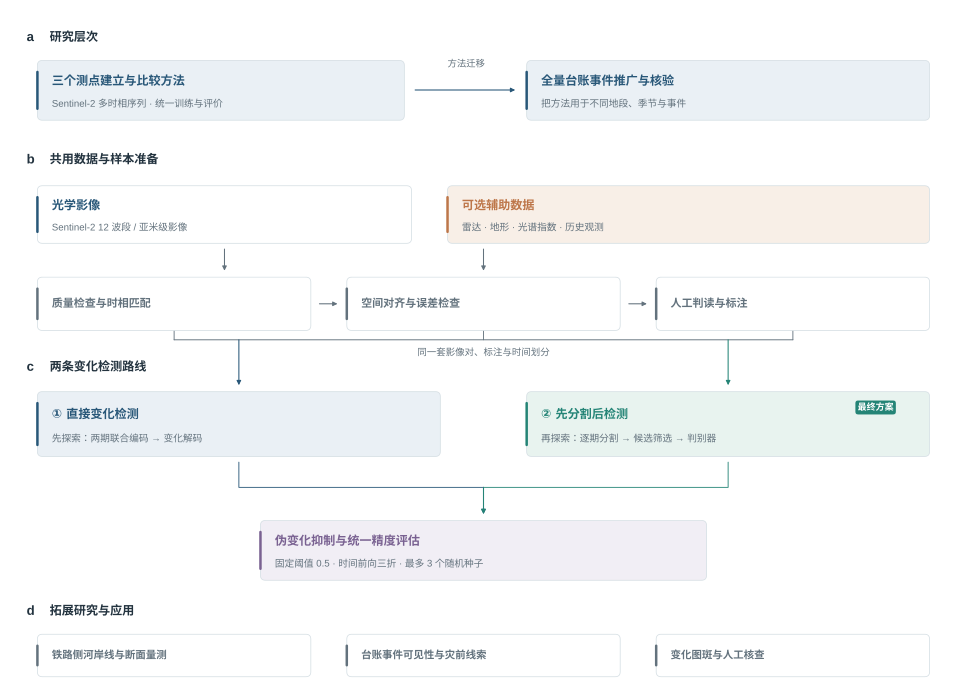
本研究分三步展开（图 1）。检测方法按先后顺序研究：先探索直接变化检测，检验两期影像和辅助数据能提供多少判别能力；再探索先分割后检测，引入逐期的地物类别信息，用候选筛选和判别器处理分割误差；最终选定最优的先分割后检测方案，即 D2LS 读 12 个波段和多年地表统计逐期分割、筛选候选像元、再由直方图梯度提升树判别。
- 准备数据：收集三个测点五年的 Sentinel-2 影像，把相邻两期组成影像对，人工标注两期之间的地表变化，并逐期标注五类地物；雷达、地形和更早的历史影像都做了时间和空间对齐，作为可选输入逐项检验。
- 研究两条检测路线：先探索直接变化检测（第 4 章），再探索先分割后检测（第 5 章）。两条路线按同一套实验逻辑推进（图 2）：先在什么都不加的条件下比较基础模型，再在最好的基础模型上逐项加入其他数据，最后只对证实有用的数据比较不同的融合方式；先分割后检测在得到分割最终方案后，再比较不同的判别器。
- 比较和选择：两条路线用同样的影像对、同样的时间划分和同样的指标评价，以最优的先分割后检测方案作为最终方法；两条路线的概率融合作为互补性的补充检验（第 6 章）。
在此基础上开展河岸线研究（第 7 章）、高分辨率影像核验和台账事件分析（第 9 章）。
2 总体思路
2.1 研究目标
铁路沿线的施工清表（清除地表植被和表土）、取土弃土、道路修建、林地砍伐和水域变化，都可能影响线路安全，需要及时发现并安排现场核查。Sentinel-2 卫星每 5 天经过同一地点一次，提供 12 个波段的多光谱地表反射率影像，其中蓝、绿、红、近红外 4 个波段为 10 米分辨率，适合对沿线做每周一次的变化筛查。
本研究的目标是：给定同一地点前后两期 Sentinel-2 影像，对每个像元（10 米 × 10 米的地面单元）判断两期之间是否发生了需要报告的地表变化，输出变化的位置和发生时段，供核查人员优先查看。
2.2 四个难点
（1）变化极其稀少。测试期内，发生变化的像元只占全部参与评价像元的 0.053%。设模型找出的真实变化比例（召回率）为 $r$，没有变化的像元被错报为变化的比例（误判率）为 $f$，变化像元所占比例为 $\pi$，则模型报出的变化中真实变化所占的比例（精确率）为
$$P=\frac{r\pi}{r\pi+f(1-\pi)}$$
要在召回率 $r=0.6$ 时使精确率达到 $P=0.7$，误判率 $f$ 必须低于 0.0135%，也就是每一万个没有变化的像元最多只能错报约 1.4 个。这个要求远高于一般的分类任务，所以方法首先要控制误报。
（2）“伪变化”来源多。雾和薄云、农田耕种收割、林草的季节性生长和枯黄、水位涨落和水色变化、冬季陡坡阴影、两期影像之间的几何错位，都会让两期影像看起来不同，但都不是需要报告的地表变化。模型必须分清“地表变了”和“观测条件变了”。
（3）目标尺度小。在 10 米像元下，施工便道、清表区边缘和林地中的小片砍伐往往只有 1—3 个像元宽。
（4）必须用过去预测未来。实际使用时，模型只能用已有的历史影像训练，再去检测以后新获取的影像。因此评价时必须按时间先后划分训练数据和测试数据，不能随机打乱。
2.3 两条技术路线
两条路线代表变化检测的两种基本思路（图 3）。
- 路线 B 直接变化检测：把前后两期影像一起输入一个深度网络，网络直接输出每个像元的变化概率。它不需要先识别地物，直接学习两期之间的差别；难点是训练样本有限时，网络容易把季节、雾等观测条件造成的差别也当成变化。
- 路线 A 先分割后检测：先把每一期影像中的每个像元分成五类地物（这一步称为“分割”），再比较两期的地物和光谱。分割告诉我们“这里是什么地物”，结果容易解释；但每一期的分割都有误差，两期直接比较时误差会叠加，产生大量虚假变化。因此在分割之后增加一步判别：先用宽松的规则选出可能发生变化的像元（称为“候选像元”），再由一个分类器（称为“判别器”）逐个判断这些候选是不是真实变化。
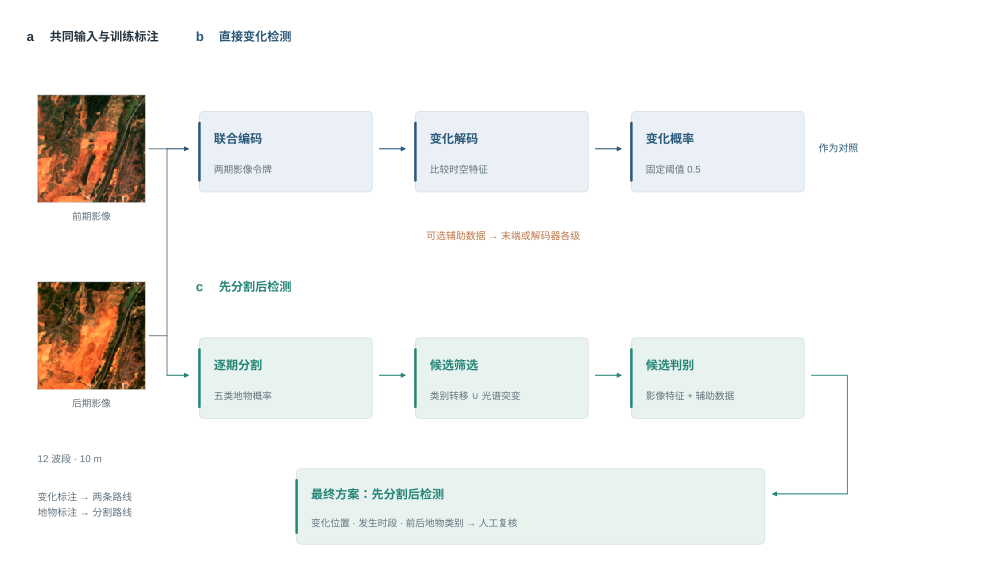
2.4 变化的定义
两套人工标注。变化标注对每个影像对逐像元标出两期之间是否发生了需要报告的变化；地物标注对每一期影像逐像元标出它属于水体、植被、耕地、裸露、建成中的哪一类。被云遮挡、缺测或在观察范围以外的像元记为“不评价”，既不参与训练，也不参与评价。
本研究检测的变化。一个像元被判读员标为变化，就算作变化；判读员在标注时注明“看不出”的变化区域（在 10 米影像上无法确认是否真的发生了变化）记为不评价。下文的全部训练和评价都按这一规则进行。这一规则只依据人工的变化判读，不依据地物标注。
为什么不用地物类别来筛选变化。另一种做法是只把前后两期地物类别不同的变化算作变化（下文称“类别转移变化”），类别相同的变化（例如林地局部清理后仍是林地，称为“类内变化”）不算。我们比较过这种做法，没有采用，原因有三点：
- 它会排除大量真实变化。表 1 列出了两种规则下保留的变化像元：只算类别转移变化时，全部变化只保留 35%，测试期只保留 27%；被排除的主要是植被内部的局部清理（例如山坡林地的小片砍伐）、裸地上的再次开挖填方，以及没有地物标注的期次，前两类正是铁路沿线需要监测的施工扰动。株洲南测试期的变化只保留 7%。
- 它让评价偏向先分割后检测。类别转移是用地物标注定义的，而先分割后检测的分割模型正是用这套地物标注训练的；直接检测完全看不到地物标注。用这种规则比较两条路线，相当于考题按其中一条路线的思路出。
- 变化范围应由监测任务定义。SECOND [1] 将变化识别与前后地物语义关联起来；土地覆盖变化监测还需要关注变化的程度及分类体系的表达范围 [2]。美国地质调查局的 LCMAP 产品分别提供地物类别变化和光谱变化结果 [3]，森林监测也区分森林退化与砍伐，亚马逊的退化面积不小于砍伐面积 [4]。因此，本研究保留人工确认、与铁路监测有关的类内扰动，并把类别转移作为细分结果统计。
类别转移变化在本研究中作为一项细分统计保留：第 6 章分别报告两条路线对“类别转移变化”和“类内变化”的检出率。
表 1 两种评价规则保留的变化像元
| 范围 | 人工标注的变化 | A 口径（本研究采用：人工标注的变化都算，标“看不出”的不评价） | 只算类别转移变化 |
|---|---|---|---|
| 全部影像对 | 19,768 | 17,655（89%） | 6,856（35%） |
| 测试期合计 | 7,172 | 5,656（79%） | 1,955（27%） |
| 测试期：株洲南 | 1,535 | 552（36%） | 112（7%） |
| 测试期：衡阳北 | 4,257 | 3,921（92%） | 1,527（36%） |
| 测试期：韶关南 | 1,380 | 1,183（86%） | 316（23%） |
注：A 口径与人工标注的差别只在判读员标为“看不出”的区域；只算类别转移变化时，前后两期地物类别相同的变化和没有地物标注的期次都不评价。
2.5 评价原则
- 按时间划分数据。把全部影像对按时间顺序做三次划分，称为三“折”。每一折都用较早的影像训练、稍后的影像验证、更晚的影像测试（表 6），模拟“用过去的数据检测未来”的实际使用方式。
- 固定门槛。模型对每个像元输出 0—1 之间的变化概率，概率不低于 0.5 的像元判为变化。这与多数变化检测论文的做法一致：网络输出“变化”和“没变”两个分数时，直接取分数高的一类。我们没有在验证集上调门槛，原因是每一折验证集中含变化的影像对只有 1—8 个（第二折只有 1 个），选出的门槛由这几个影像对决定（图 4）：直接检测的同一个模型，在第二折选出的门槛多在 0.3—1.0 之间，在第三折却多在 0.001—0.04 之间，相差上百倍；用这样选出的门槛判定，附录 A 的 9 个配置中有 8 个的测试成绩低于固定 0.5（直接检测最终方案低 0.058）；唯一的例外是 TerraMind，它的变化概率普遍偏低（召回率只有 0.202），0.5 对它偏高。验证集选门槛的成绩放在附录 A。
- 怎样选方案。每一步都比较统一阈值 0.5 下测试期的三折平均 F1（分割模型之间比较测试期的 mIoU），取最高的进入下一步；与最高者相差不到 0.005（与不同随机种子之间的差别相当）的视为打平，打平时取更简单的方案（用到的数据更少、接法更简单）；同时报告 AP 和差值的区间，差值区间包含 0 时写明“现有数据尚不能确认差异”。验证集只用在两处：训练过程中决定在第几轮停止、学习率取多少；两条路线融合时选择两者的权重（第 6 章）。
- 指标。精确率 P（报出的变化中真实变化所占比例）、召回率 R（真实变化中被报出的比例）、F1（P 和 R 的调和平均，是综合指标）、变化类交并比 IoU；同时报告平均精度 AP：按预测概率从高到低计算精确率与召回率，以各次召回增量加权对应精确率，它不依赖任何一个门槛，衡量模型能不能把真实变化排在没有变化的像元前面。分割另报五类交并比的平均 mIoU 和总体精度。主要指标为三折平均 F1，定义见 4.4.1 节。
- 重复训练。深度网络和判别器每次训练的结果有随机波动。每个配置训练 3 次（使用 3 个不同的随机种子），报告平均值。明显落后、不会影响结论的配置，只训练 1—2 次，表中注明训练次数。
- 差异检验。比较两个配置时，每次同时有放回地重抽训练次数和各折内的测试影像对，重复 2,000 次，每次计算两个配置平均 F1 之差，得到差值的 95% 区间。区间不包含 0，称为差异显著。同时报告把全部测试影像对合在一起计算 F1 的检验。前两折分别只有 6 个和 4 个测试影像对含有变化，三折平均 F1 的区间因此较宽。
- 同条件比较。同一张表里的配置使用同一种训练标签、同样的训练预算（训练步数、每批样本数、切块大小）和同样的评价方法。
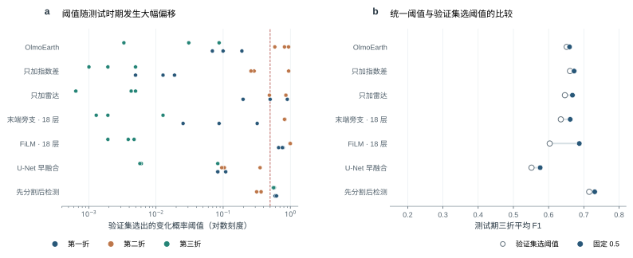
2.6 实验逻辑
两条路线都按同样的顺序推进，每一步只改变一个方面，并按统一阈值 0.5 下的三折平均 F1 选出进入下一步的方案（图 2）。
直接变化检测（第 4 章）
- 什么都不加，哪个基础模型最好：所有方法只输入前后两期影像，用同样的训练预算和评价方法比较，选出最好的基础模型；
- 在最好的基础模型上加入其他数据，哪些有用：先用最简单的接入方式（拼接到网络末端）逐项加入光谱指数差、往年同期、地形、雷达、逐期光照、拍摄日期和更早的影像，再对有用的数据做组合；
- 只对证实有用的数据，比较不同的融合方式：FiLM 调制、门控、交叉注意力、逐级相加等，看能否进一步提高。
先分割后检测（第 5 章）
- 只输入影像（12 波段或 RGB），哪个分割模型最好：在统一的训练预算下充分训练每个模型，按分割精度选出最好的分割模型；
- 在最好的分割模型上加入其他数据，哪些能提高分割精度：先用最简单的接入方式（在输入端拼接），逐项加入、再做组合；
- 只对证实有用的数据，比较不同的融合方式，得到分割的最终方案；
- 在分割最终方案上比较判别器：梯度提升树等传统机器学习模型和表格深度网络，并检验判别器加入辅助数据，得到先分割后检测的最终方案（多模态大模型复核拿不准的候选斑块列入后续实验，9.3 节）。
每一步之内，先比较最有可能改变结论的模型和输入，再补全其余的，使结论完整。
3 已完成的工作
表 2 已完成的工作
| 工作 | 内容 | 规模与结果 |
|---|---|---|
| 影像与数据构建 | 下载三个测点的 Sentinel-2 地表反射率影像；生成云和缺测掩膜；前后两期影像精确对齐；12 个波段统一到 10 米网格 | 480 期影像，组成 511 个影像对；对齐后残余错位的中位数为 0.05 个像元 |
| 变化标注 | AI 先自动标出可能的变化区域，判读员逐片看图复核，标记变化类型；看不清的区域注明“看不出” | 全部影像对逐像元标注；计入评价的变化像元 17,655 个 |
| 地物标注 | 水体、植被、耕地、裸露、建成五类；AI 预标后多轮逐像元人工核查，并检查同一位置前后各期类别是否合理 | 480 期中的 424 期 |
| 辅助数据 | 光谱指数差、往年同期、多年地表统计、地形、Sentinel-1 雷达、逐期光照与阴影、成像质量 | 7 类，每类都做了时间对齐、空间对齐和质量控制 |
| 直接变化检测 | 第一步：5 种模型在统一条件下比较；第二步：OlmoEarth 上逐项加入 7 种数据及其组合；第三步：5 种融合方式比较，另做随机丢弃、原生雷达等补充检验 | 第一步 5 种模型（OlmoEarth、U-Net 早融合、TerraMind 各 3 次训练，Changer、ChangeFormer 各 2 次训练）；第二步 10/10 项、第三步 5 种接法中 5 种、FiLM 接入各种数据 14/14 项完成 3 次训练；随机丢弃、原生雷达等补充检验 6 项；见第 4 章 |
| 先分割后检测 | 分割第一步：5 个分割模型在统一条件下比较；第二步：D2LS 上逐项加入 5 组数据；第三步：多年地表统计的 4 种接法；第四步：8 种判别器比较，并检验判别器加入辅助数据 | 分割第一步 5 个模型（D2LS、SegFormer-B2、SAM 3.1 + LoRA、Swin V2 UPerNet、ResNet-34 U-Net）完成三折训练；第二步 6/6 项已有三折结果；判别器 8 种完成比较，判别器加辅助数据 3 种设置；见第 5 章 |
| 两条路线融合 | 等权融合、按验证集选权重的融合；重复报警的后处理诊断 | 等权融合 F1 0.733；按验证集选权重融合 F1 0.742（补充对照）；“同一处只报一次”的后处理诊断；见第 6 章 |
| 河岸线研究 | 多年水域范围统计、水边线提取、铁路一侧的河岸断面量测 | 株洲南 31 个、韶关南 26 个断面 |
| 高分辨率核验准备 | 吉林一号存档影像选片与计价 | 93 景，覆盖 60 个“测点 × 季度”中的 53 个 |
| 台账事件分析 | 台账是铁路部门记录沿线隐患和施工事件的清单；（只在内部版）判断事件在 10 米影像上是否可见 | （只在内部版） |
4 直接变化检测
4.1 变化检测方法的发展
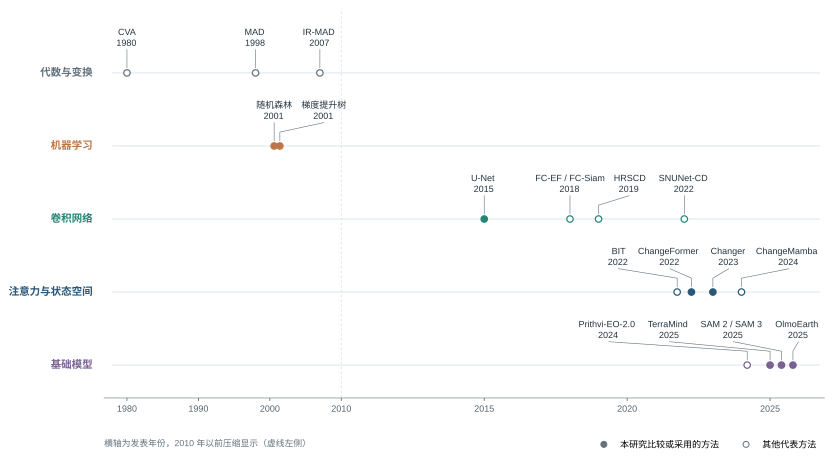
遥感变化检测方法大体经历了五个阶段（图 5）。
代数与变换方法。最早的方法直接比较两期影像的数值，例如两期相减（差值法）或相除（比值法）。变化向量分析（CVA）[5,6] 把每个像元两期各波段的差值看成一个向量，用向量的长度表示变化强度。多元变化检测（MAD）及其迭代改进形式 IR-MAD [7] 用统计方法找出两期之间最不相关的波段组合，以突出变化。这类方法不需要人工标注，但季节、大气和光照的差别同样会产生很大的差值，用一个门槛很难同时做到多找出变化、少误报。
机器学习方法。先把两期的光谱、指数和周围像元的统计量整理成一组数字（称为特征），再用随机森林、支持向量机、梯度提升树等分类器，从人工标注中学习“变化 / 没变”的区分规则。它能利用标注，效果取决于特征的设计。
卷积孪生网络。Daudt 等 [8] 提出用卷积网络做变化检测：FC-EF 把两期影像叠在一起输入一个网络；FC-Siam-diff 和 FC-Siam-conc 用同一个网络（称为“孪生”，即两份共享参数的网络）分别处理两期影像，再比较两期的特征。之后的 SNUNet-CD [9] 加入更密集的连接和注意力模块，改善了细小目标的检测。
注意力、Transformer 与状态空间模型。这类方法能建模影像中相隔较远位置之间的关系。BIT [10] 先把两期影像压缩成少量“概括性向量”，再比较它们的关系；ChangeFormer [11] 用分层的 Transformer 提取不同尺度的两期特征；Changer [12] 在两期特征之间互相交换信息；ChangeMamba [13] 用状态空间模型，以较小的计算量建模大范围的时空关系。
遥感基础模型。近两年出现了一类“基础模型”：先在数百万景、多传感器、多时相的卫星影像上做无需标注的预训练，学到通用的地表特征，再用少量标注数据适配到具体任务上，代表有 Prithvi-EO-2.0 [14]、TerraMind [15]、OlmoEarth [16]。DINOv3 [17]、SAM 2 [18] 等通用视觉大模型也被用于遥感变化检测 [19]。基础模型对本研究很重要：本研究只有三个测点、数百个影像对，从头训练的网络很难学到稳定的地表特征，而预训练模型已经“见过”大量不同地区、不同季节的多光谱影像。
主流的深度学习变化检测数据集（如 LEVIR-CD、WHU-CD）都是亚米级的航空或卫星影像；基于 10 米 Sentinel-2 影像的公开数据集只有 OSCD [20] 等少数几个，规模都很小。Corley 等 [21] 的系统复现还发现，在同样的训练条件下，许多新网络并不比简单的 U-Net 明显更好。因此，本研究不依赖公开数据集上的排名，而是在每一类方法中选取代表，在本项目的数据和时间划分上统一比较。
4.2 参与比较的方法
本研究从上述各类中选取代表，在完全相同的数据、标签、时间划分和训练条件下比较：
- 卷积网络：U-Net 早融合（ResNet-34 编码器，ImageNet 预训练），把两期影像叠在一起输入；
- Transformer 孪生网络：Changer 与 ChangeFormer（都用 MiT-b0 骨干），两期影像分别编码；Changer 在编码过程中让两期特征互相交换信息，ChangeFormer 把两期各尺度特征拼接后解码；都只读 6 个波段；
- 遥感基础模型：OlmoEarth 与 TerraMind，都只训练少量新增参数（LoRA），两者的区别在于两期是一起编码还是分别编码、每个令牌代表的范围大小（4.5 节）；
- 先分割后检测中的分割模型：D2LS、SegFormer、SAM 3.1、Swin V2 UPerNet 和 ResNet-34 U-Net（5.5 节）；两期分割结果直接比较类别（分类后比较）作为不训练判别器的参照（5.3.2 节）；
- 判别器：梯度提升树类（直方图梯度提升树、LightGBM、XGBoost、CatBoost）、随机森林、神经网络、逻辑回归和表格深度网络（5.8 节）。
4.3 直接检测采用的模型：OlmoEarth 变化检测网络
4.3.1 为什么选择 OlmoEarth
OlmoEarth 是美国艾伦人工智能研究所 2025 年发布的开源遥感基础模型 [16]。选择它有三个原因：
- 输入与本项目一致。它预训练时就使用 Sentinel-2 L2A 的全部 12 个波段（还包括 Sentinel-1 雷达、Landsat 等数据），本项目的影像可以原样输入，不需要删减波段或改变通道。
- 能直接处理多期影像。它的预训练数据就是同一地点的多期影像，网络内部有表示时间先后的编码。前后两期可以作为一个两期的时间序列一起输入，两期的信息在网络内部直接相互比较。
- 在“什么都不加”的比较中效果最好（4.5 节）。
4.3.2 网络总体结构
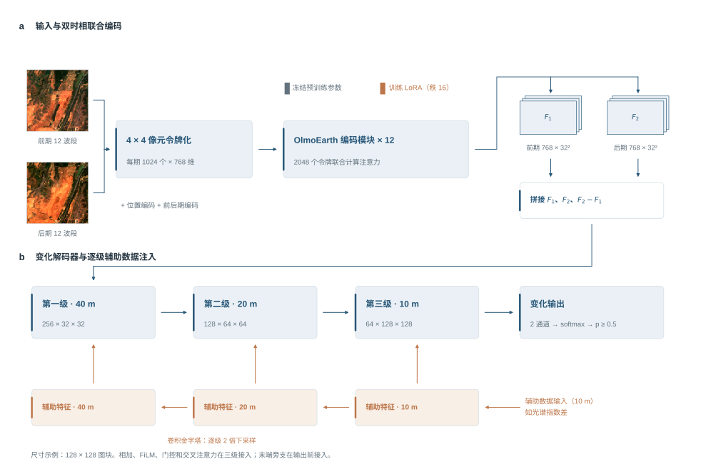
网络由四部分组成（图 6）：
- 编码器：OlmoEarth v1.2 Base，由 12 层 Transformer 组成，把影像转换成描述地表的特征；
- 低秩适配（LoRA）：编码器原有的预训练参数保持不变，只额外训练少量参数，让网络适应“发现变化”这一任务；
- 变化解码器：比较两期特征，并把结果放大回 10 米分辨率，得到每个像元的变化概率；
- 辅助数据接入（可选）：把光谱指数差、雷达等数据接入解码器。
4.3.3 输入：反射率换算、归一化与“令牌”
每一期输入 12 个波段的地表反射率（地物反射的太阳光比例，取值 0—1）。首先把反射率乘以 10000，换回 Sentinel-2 产品原始的数值尺度；再按 OlmoEarth 官方提供的每个波段的均值 $\mu_b$ 和标准差 $\sigma_b$ 做归一化：
$$\tilde{x}_b=\frac{x_b-(\mu_b-2\sigma_b)}{4\sigma_b}$$
这样，输入数据的取值分布与模型预训练时完全相同，波段的排列顺序也按 OlmoEarth 的要求调整。
随后，影像按 4 × 4 像元切成小块，每一小块的 12 个波段共 192 个数值，经一次线性变换成为一个 768 维的向量，称为“令牌”。一块 128 × 128 像元的图块因此变成 32 × 32 个令牌，每个令牌代表 40 米 × 40 米的地面。每个令牌再加上两种编码：位置编码说明它在影像中的位置，时间编码说明它属于前期还是后期。
4.3.4 编码器与低秩适配
注意力机制。Transformer 的核心是“注意力”：每个令牌通过三个线性变换得到查询向量 $Q$、键向量 $K$ 和值向量 $V$，计算
$$\mathrm{Attention}(Q,K,V)=\mathrm{softmax}\!\left(\frac{QK^{\mathsf T}}{\sqrt{d}}\right)V$$
其中 $QK^{\mathsf T}$ 衡量两个令牌之间的相关程度，softmax 把相关程度转换成合计为 1 的权重，每个令牌按这些权重汇集其他令牌的信息 $V$，$d$ 是向量的维数。前后两期的令牌一起参与计算，所以后期某处的令牌可以直接“看到”前期同一位置及周围的令牌，这正是判断变化需要的信息。12 层这样的计算依次叠加，令牌包含的信息从局部的光谱逐步扩展到更大范围的地物结构。
低秩适配（LoRA）。本项目只有数百个影像对，如果更新编码器全部约 1.15 亿个参数，很容易过拟合（只记住训练数据、对新数据效果差）。因此采用低秩适配方法 LoRA [22]：保持预训练参数 $W$ 不变，在每层注意力的查询和值两个变换上，各加一个由两个小矩阵相乘得到的增量：
$$W'=W+\frac{\alpha}{r}BA,\qquad A\in\mathbb{R}^{r\times d},\;B\in\mathbb{R}^{d\times r},\;r=16,\;\alpha=16$$
$A$ 把 768 维压缩到 16 维，$B$ 再映射回 768 维。$B$ 的初始值为零，所以训练开始时网络与预训练模型完全相同。需要训练的编码器参数只有 59 万个，约为原来的 0.5%：既保留了预训练学到的地表特征，又能让注意力学会关注变化。
4.3.5 变化解码器
编码器输出前期特征 $F_1$ 和后期特征 $F_2$（各 768 维）。解码器先把两期特征和它们的差值拼在一起：
$$H=[F_1,\;F_2,\;F_2-F_1]$$
共 2304 维。保留两期原特征，是为了让网络知道“原来是什么、后来是什么”；差值则直接表示“朝什么方向变了”。这种拼接方式与 ChangeViT [23] 等网络一致。之后依次：
- 用 1 × 1 卷积把 2304 维压缩到 256 维（解码器第一级，40 米分辨率）；
- 两次“放大 2 倍 + 3 × 3 卷积”，特征维数依次降为 128、64（第二、三级，20 米和 10 米分辨率）；
- 再用一层 3 × 3 卷积整理相邻像元之间的关系，得到每个像元的 64 维特征 $h$；
- 最后用 1 × 1 卷积输出“没变”和“变化”两个分数，经 softmax 得到变化概率。
4.3.6 辅助数据的五种接入方式
除两期影像外，网络可以读取辅助数据 $a$（光谱指数差、往年同期、多年地表统计、地形、雷达、逐期光照，制作方法见 4.4.1 节）。辅助数据不进入编码器：编码器的输入和预训练时保持一致，预训练特征不受干扰。我们比较了五种接入方式（图 7）。五种方式有一个共同点：新加的、输出到主网络的最后一层参数，初始值全部为零。训练开始时网络等同于只看影像的网络，只有当辅助数据确实能帮助减少训练误差时，这些参数才会离开零。
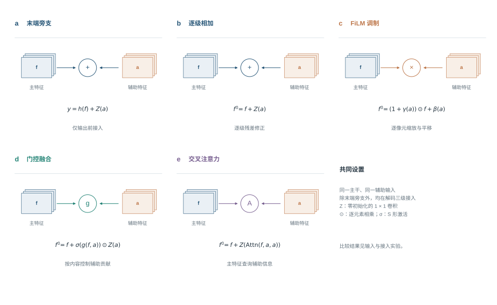
- 末端旁支（简单融合）：在解码器末端，把像元特征 $h$ 与辅助数据拼接，经两层 3 × 3 卷积和一层 1 × 1 卷积，输出对变化分数的修正量：$s=s_0+G([h,\;a])$，其中 $s_0$ 是只看影像时的变化分数。这是最简单、参数最少的接法，第二步用它筛选输入。
- 逐级相加：$f'=f+Z(a)$，在解码器每一级把辅助特征直接加到主特征上。
- FiLM 调制 [24]：$f'=f\odot(1+Z_\gamma(a))+Z_\beta(a)$。辅助数据为每个像元、每个通道生成一个缩放系数和一个平移量，去调节主特征，例如“这里坡度大，阴影造成的变暗要打折扣”。
- 门控 [25]：$f'=f+\sigma\big(G([f,\;a])\big)\odot Z(a)$。由主特征和辅助特征一起决定每个像元放进多少辅助信息，例如光学影像清楚时少用雷达。
- 交叉注意力 [26]：$f'=f+Z\big(\mathrm{Attn}(Q{=}f,\;K{=}V{=}a)\big)$，在 8 × 8 像元的窗口内，主特征作为查询，到辅助特征中检索相关信息。
后四种接入方式中，辅助数据先经过一个小型卷积金字塔（每级两层卷积），得到与解码器三级分辨率相同的特征，再按上式接入。
4.3.7 损失函数与难负样本
训练时最小化交叉熵损失和 Dice 损失之和：
$$L=L_{\text{CE}}+L_{\text{Dice}},\qquad L_{\text{Dice}}=1-\frac{2\sum_i p_iy_i+\epsilon}{\sum_i p_i+\sum_i y_i+\epsilon}$$
其中 $p_i$ 是像元 $i$ 的变化概率，$y_i$ 是标注（变化为 1，没变为 0），$\epsilon$ 是防止分母为零的小常数。交叉熵让每个像元的概率接近标注；Dice 损失衡量预测的变化区与标注的变化区重叠了多少，在变化像元极少时仍然有效 [27]。标注为“不评价”的像元不参与损失计算。
针对 2.2 节的难点（1）和（2），训练中加入难负样本：标注为没变、但两期的光谱指数差别很大的像元（按 4.4.1 节的标准化方法，差值的绝对值不小于 3）。这类像元正是雾、季节和水位造成的“伪变化”，最容易被误报。它们的交叉熵损失乘以 5 倍；切取训练图块时，没有对准变化像元的图块中，有一半会对准一个难负样本，让网络专门学习“光谱变了，但地表没变”的情形。
4.3.8 训练与推理设置
表 3 OlmoEarth 直接变化检测的训练与推理设置
| 项目 | 设置 |
|---|---|
| 训练图块 | 128 × 128 像元。含变化的影像对被抽到的概率是其他影像对的 3 倍；从含变化的影像对切图块时，一半保证包含一个随机选取的变化像元；其余图块中，一半保证包含一个难负样本，另一半随机切取 |
| 数据增强 | 随机水平 / 垂直翻转和 90° 旋转，前后两期同步变换 |
| 优化器 | AdamW；学习率 0.0003，前 3 轮逐步升高，之后按余弦曲线降到 1%；权重衰减 0.0001 |
| 批大小与轮数 | 每批 8 个图块，每轮 50 批；最多 80 轮、至少 20 轮；验证集 F1 连续 20 轮不提高即停止，取验证集 F1 最高的一轮 |
| 其他 | 混合精度训练；梯度裁剪阈值 5 |
| 推理 | 对整幅 256 × 256 像元影像，以 128 × 128 的窗口、每次移动 64 像元滑动预测，重叠部分取平均 |
| 判定 | 变化概率不低于 0.5 判为变化 |
4.4 数据与评价
4.4.1 数据与预处理
本节逐项说明进入模型的每一种数据是怎样获取和处理的。两条检测路线使用同一批影像对、同一套标注和同一个时间划分；辅助数据的制作方法也相同，只是接入模型的位置不同。
（1）Sentinel-2 影像
- 产品与范围：使用 Sentinel-2 L2A 级地表反射率产品（已做大气校正）。每个测点取 256 × 256 像元，即 2.56 km × 2.56 km，统一到 UTM 49N 投影（EPSG:32649）的 10 米网格上；时间范围为 2021 年 7 月至 2026 年 7 月。组成影像对的影像，株洲南、衡阳北、韶关南分别有 170、199、111 期。
- 波段：使用除卷云波段 B10 以外的全部 12 个波段。其中 10 米分辨率的有 B2（蓝）、B3（绿）、B4（红）、B8（近红外）；20 米的有 B5、B6、B7、B8A（红边）和 B11、B12（短波红外）；60 米的有 B1（气溶胶）和 B9（水汽）。20 米和 60 米的波段用双线性插值重采样到 10 米网格，以便逐像元对应。
- 辐射一致性：欧空局从 2022 年 1 月 25 日起更新了数据处理版本，此后的 L2A 数值整体多了 1000。本研究对此后的影像按“反射率 =（数值 − 1000）/ 10000”换算，对此前的影像按“反射率 = 数值 / 10000”换算，使前后的反射率可以直接比较。
- 云与缺测：每期影像附带云掩膜和缺测掩膜。云掩膜取 L2A 自带的场景分类结果中的云、云影、卷云和无数据四类。一个像元只要在前后任一期被云遮挡或缺测，就不参与训练和评价。配准后可见光波段反射率小于 −0.005 的异常像元同样不参与评价。
- 雾的识别：薄雾不会被场景分类识别为云，但会让可见光反射率整体升高。本研究为每个测点设定门槛，根据茂密植被区蓝光反射率的统计值，自动判断每一期影像是否有雾。这个结果用于成像条件分析（有雾与无雾影像对分开评价）和成像质量数据（表 5）。全部影像中约四分之一的期有雾。
（2）影像对的组成
同一测点云量较少、可以判读的影像按时间排序，相邻两期组成一个影像对，三个测点共 477 对；另有 34 对是判读时为个别变化区域另选了更合适的前期影像而补充的，合计 511 对。两期间隔的中位数为 7 天，338 对不超过 10 天，90% 不超过 32 天。有 241 对的前后两期来自不同的卫星轨道。
（3）前后两期的精确对齐（配准）
两期影像由卫星在不同时间拍摄，可能存在不到一个像元的整体错位。错位会让地物边缘在两期差值图上出现成对的“亮—暗”条纹，被误认为变化 [28,29]。本研究把前期影像对齐到后期影像：
- 分别用近红外 B8 和红光 B4，在陆地区域和含水面区域，用相位相关法估计整幅影像的平移量；
- 在“不移动”“按各单波段估计值移动”“按两者平均值移动”几个方案中，选移动后陆地区域残余错位最小的一个；
- 前期各波段按选定的平移量做三次样条插值移动；云和缺测掩膜同步移动；移出图外的部分记为缺测。后期影像和标注保持不动。
对齐前，整幅影像平移量的中位数为 0.24 个像元，90% 的影像对在 0.73 个像元以内，21 对超过 1 个像元。对齐后，把每对影像分成 64 × 64 像元的小块，逐块测量残余错位：各影像对残余错位中位数的中位值为 0.05 个像元，90% 的影像对不超过 0.07 个像元，99% 不超过 0.11 个像元（图 8，508 个可测量的影像对）。来自不同轨道的影像对与同一轨道的影像对残余错位相同。变化检测文献通常要求配准误差小于 0.2 个像元 [28,29]，本数据满足这一要求。
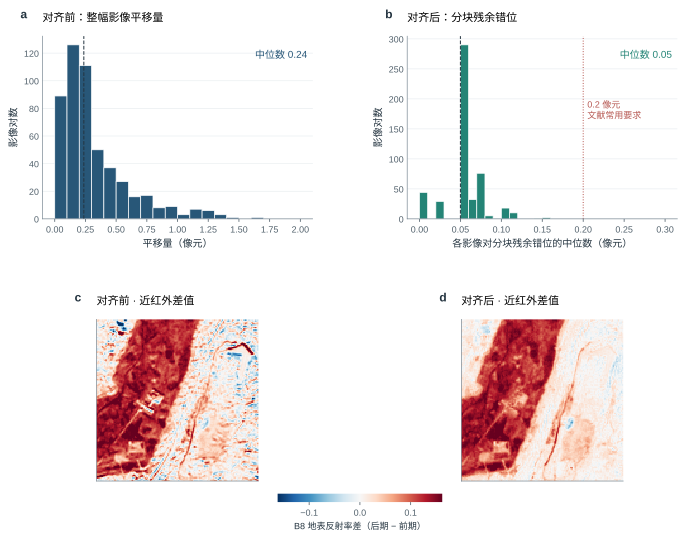
（4）变化标注
变化标注画在后期影像的网格上，每个像元取三种值之一：0 表示没有变化，1 表示变化，255 表示不评价（观察范围以外、被云遮挡或缺测、判读员注明“看不出”）。标注流程是：先由光谱指数规则结合 AI 看图标出可能的变化区域（与本研究比较的检测模型无关），判读员再逐片看图复核、修改后保存，并给每个变化区域标记类型（新增裸露、植被减少、道路增加、建筑增加、水域增加、水域减少）。标注遵循三条规则：
- 只标需要报告的地表变化；农田正常的耕种收割、林草的季节变化、水色变化，以及雾、阳光反射造成的差异，都不标为变化；
- 同一处变化只在它第一次出现的那一对影像中标为变化，之后的影像对不再重复标；
- 判读员看不清、无法确认的区域，注明“看不出”，记为不评价。
全部影像对共有 17,655 个计入评价的变化像元，测试期 5,656 个（表 6）。
（5）五类地物标注
先分割后检测需要每一期的地物类别。地物标注包括水体、植被、耕地、裸露、建成五类，共 424 期。制作流程是：AI 预标，判读员多轮逐像元核查，再检查同一位置前后各期的类别是否合理（例如建成区不会在两周内变回植被）。每一折只用该折训练期和验证期的地物标注训练分割模型。
（6）辅助数据
辅助数据用来回答两期影像本身难以回答的问题：这里的变化是不是季节性的？这里的地形会不会造成阴影？这一期是不是受到了雾的干扰？每一种辅助数据都遵循三条原则：
- 时间上不使用未来数据：只使用不晚于后期影像的观测（往年同期只用对应日期以前的历史影像；雷达是唯一的例外，见下文）；
- 空间上与影像对逐像元对齐；
- 缺失处记 0，同时给出观测次数或有效标记：多年地表统计给出每个像元的无云观测次数，往年同期给出可用的往年观测数，雷达给出有效标记，让模型能区分“没有数据”和“没有异常”。
图 9 展示了一个影像对的辅助数据，表 4 汇总了每类辅助数据的含义、制作方法和对齐方式，表 5 逐层列出全部实验用到的每一类辅助数据（包括只在分割或判别器中使用的几类），按进入模型的顺序编号。

表 4 辅助数据的制作与对齐
| 类别 | 回答什么问题 | 制作方法 | 时间对齐 | 空间对齐与质量控制 |
|---|---|---|---|---|
| 光谱指数差（6 层） | 植被、水分、裸土、亮度朝哪个方向变了 | 两期分别计算植被指数 NDVI [30]、水体指数 NDWI [31] 和 MNDWI [32]、裸土指数 BSI [33]、短波红外与近红外之差、可见光亮度，再用后期减前期；为消除整幅影像的整体偏差，在两期都没有云的区域内做稳健标准化 $z=(d-\mathrm{中位数})/(1.4826\times\text{中位数绝对偏差})$，截断到 ±6 后除以 6 | 只用这一对影像 | 与影像对同一网格；云和缺测处记 0，且不参与评价 |
| 往年同期（7 层） | 当前状态与往年同一季节相比是否异常，用来区分正常的季节变化 | 对前期和后期分别建立“往年基线”：取至少早 300 天、一年中的日期相差不超过 30 天的无云影像，逐像元求中位数和中位数绝对偏差（下限 0.02）；计算 NDVI、MNDWI、BSI 相对基线的偏离（截到 ±6 后除以 6）；第 7 层为后期可用的往年观测数（各像元中位数）/ 10 | 只用对应日期以前的历史影像 | 与测点网格对齐；“无云”按场景分类判断，没有另外剔除有雾的期；往年观测不足 3 次或当期有云的像元记 0 |
| 多年地表统计（7 层） | 这里多年来通常是什么地表 | 用前期及以前的全部无云观测，逐像元统计水体出现频率（MNDWI > 0.1 且 NDVI < 0.2 的观测比例）、NDVI 的 10%、50%、90% 分位数、BSI 中位数、有“一绿一裸”耕作周期的年份比例（一年至少 4 次无云观测、NDVI 最高 ≥ 0.6 且最低 ≤ 0.3）和无云观测次数 / 50 | 只用前期及以前的影像 | 与影像对同一网格；观测不足 3 次的像元前 6 层记 0 |
| 地形（5 层） | 地表处在什么地形位置，有没有陡坡 | 哥白尼 30 米数字高程模型 [34]，双线性重采样到 10 米网格；计算相对高程（与测点中位高程之差 / 50 米，截断到 ±1）、坡度 / 45°、坡向的正弦和余弦（乘以 min(坡度 / 10°, 1)，使平地的坡向为 0）、局部起伏 / 30 米 | 静态数据，测量于 2011—2015 年，早于全部影像，反映施工前的地形 | 与测点网格对齐；原始分辨率 30 米 |
| Sentinel-1 雷达（6 层） | 不受云雾影响的地表后向散射变化 | 经过地形校正的后向散射（VV、VH 两种极化及二者之比），取前后两景的分贝差 / 3；前后两景与光学影像相差的天数 / 12；有效标记 | 前后包夹、同一轨道：前景日期不晚于前期光学影像，后景日期不早于后期光学影像，两景属于同一轨道，两端各不超过 12 天；不满足的影像对整对记为缺失 | 实测雷达与光学影像之间存在按轨道固定的整体错位（株洲南约 21—25 米、衡阳北约 21 米、韶关南约 50 米），已按轨道整体平移校正，校正后残余错位不超过 0.12 个像元 |
| 逐期光照与阴影（6 层） | 两期太阳高度不同造成的明暗和阴影差异 | 由成像时刻和测点经纬度计算太阳天顶角 $\theta_z$ 和方位角 $\phi_s$，结合坡度 $s$ 和坡向 $a$ 计算地表光照强度 $\cos i=\cos\theta_z\cos s+\sin\theta_z\sin s\cos(\phi_s-a)$，并沿太阳方向判断山体投射阴影；输出前后两期的光照强度及其差值、两期的阴影标记及其差值 | 与两期成像时刻一一对应 | 由数字高程模型计算，与测点网格对齐 |
| 成像质量（15 层） | 这一对影像的观测条件是否可靠 | 逐像元的 8 层：前期、后期各自的厚云、薄云、云影、缺测标记（来自场景分类和缺测掩膜）；每个影像对一个值的 7 层：是否跨轨道、前期有雾、后期有雾、前期和后期的水面耀斑风险（由太阳镜面反射方向与卫星观测方向的夹角换算）、两期间隔天数（取对数）、前期影像的配准平移量 | 与两期一一对应 | 与测点网格对齐 |
除上表 7 类外，部分实验还用到另外几类数据：直接检测检验过真实拍摄日期、前期之前 2 期影像和作为编码器输入的原生雷达；分割检验过当期无云标记、前一期影像、当期光谱指数和相对前一期的指数差；判别器检验过离铁路距离和雷达特征。表 5 把全部 16 类数据逐层列出。
表 5 各类辅助数据的逐层内容（按进入模型的顺序编号）
| 数据 | 层数 | 逐层内容 | 用在哪条路线 |
|---|---|---|---|
| 光谱指数差 | 6 层 | ① NDVI 差；② NDWI 差；③ MNDWI 差；④ BSI 差；⑤ 短波红外减近红外（B11 − B8）之差；⑥ 可见光亮度（B2、B3、B4 均值）之差。均为后期减前期；每个影像对在两期都无云、无缺测的像元上减中位数、除以 1.4826 倍中位数绝对偏差，截到 ±6 后除以 6；云和缺测处为 0 | 直接检测（第二至四步） |
| 往年同期 | 7 层 | ① 后期 NDVI 相对往年同季的偏离；② 后期 MNDWI 的偏离；③ 后期 BSI 的偏离；④—⑥ 前期的同样三项；⑦ 后期可用的往年同季观测数（各像元的中位数 / 10，截到 1）。往年同季 = 早于该期至少 300 天、年内日序相差不超过 30 天的无云观测；偏离 =（当期值 − 往年逐像元中位数）/（1.4826 × 往年中位数绝对偏差，下限 0.02），截到 ±6 后除以 6；往年观测不足 3 次或当期有云的像元为 0 | 直接检测；分割（输入端，只给后期影像）；判别器 |
| 多年地表统计 | 7 层 | ① 水体出现频率（MNDWI > 0.1 且 NDVI < 0.2 的观测所占比例）；② NDVI 的 10% 分位数；③ NDVI 中位数；④ NDVI 的 90% 分位数；⑤ BSI 中位数；⑥ 有“一绿一裸”耕作周期的年份比例（某年至少 4 次无云观测、NDVI 最高 ≥ 0.6 且最低 ≤ 0.3，记为一个耕作年）；⑦ 无云观测次数 / 50（截到 1）。只用该影像对前期（含）以前的无云观测；观测不足 3 次的像元 ①—⑥ 为 0 | 直接检测（FiLM）；分割（输入端）；判别器 |
| 地形 | 5 层 | ① 相对高程（高程减测点中位数后 / 50 米，截到 ±1）；② 坡度 / 45°；③ 坡向正弦；④ 坡向余弦（③④ 乘以 min(坡度 / 10°, 1)，平地为 0）；⑤ 局部起伏 / 30 米（截到 1）。同一测点各影像对相同，不随时间变 | 直接检测；分割（输入端）；判别器 |
| 雷达（前后包夹、同一轨道） | 6 层 | ① VV 后向散射差；② VH 后向散射差；③ 交叉极化比（VH − VV）差（①—③ 为后侧景减前侧景的分贝差 / 3，截到 ±3）；④ 前侧景早于前期光学影像的天数 / 12；⑤ 后侧景晚于后期光学影像的天数 / 12；⑥ 有效标记（1 = 有符合规则的雷达）。前侧景 = 前期当天或之前同一轨道最近的一景，后侧景 = 后期当天或之后同一轨道的第一景，两端各不超过 12 天；按轨道校正整体错位，3 × 3 去斑；无效处 ①—⑤ 为 0 | 直接检测 |
| 原生雷达 | 2 景 × 2 极化 | ① 前侧景 VV；② 前侧景 VH；③ 后侧景 VV；④ 后侧景 VH（前侧景、后侧景同“雷达（前后包夹、同一轨道）”；分贝值，不去斑，按 OlmoEarth 预训练的方式归一化）。作为 OlmoEarth 的 Sentinel-1 输入，与两期光学影像一起进入编码器；没有符合规则的雷达处按缺测屏蔽 | 直接检测（进入编码器） |
| 逐期光照与阴影 | 6 层 | ① 前期局部光照 cos i；② 后期 cos i；③ 二者之差；④ 前期投射阴影标记；⑤ 后期投射阴影标记；⑥ 二者之差。由每景成像时刻的太阳天顶角、方位角和哥白尼 30 米数字表面模型计算；投射阴影沿太阳方向最远追 1 千米，cos i ≤ 0 的自阴影也算阴影 | 直接检测 |
| 成像质量 | 15 层 | ①—④ 前期厚云、薄云、云影、缺测标记；⑤—⑧ 后期同样四项（以上逐像元）；⑨ 是否跨轨道；⑩ 前期有雾；⑪ 后期有雾；⑫ 前期水面耀斑风险；⑬ 后期水面耀斑风险（由太阳镜面反射方向与卫星观测方向的夹角换算：60° 以上为 0，20° 以下为 1）；⑭ 两期相隔天数（ln(1 + 天数) / ln 131）；⑮ 前期影像配准平移量（像元数 / 2，截到 1）。⑨—⑮ 每个影像对一个值 | 直接检测（FiLM） |
| 真实拍摄日期 | 时间编码 | 两期影像各自的实际成像日（日、月、年）作为 OlmoEarth 的时间编码；默认把两期固定写成 2023 年 6 月 15 日和 7 月 15 日 | 直接检测（OlmoEarth 时间编码） |
| 前期之前 2 期影像 | 2 期 × 12 波段 | 前期之前 90 天内最近的 2 期影像（测点范围内云和缺测比例低于 20%，无雾的优先）的 12 个波段，按近红外 B8 相位相关配准到后期网格；与前后两期一起作为 4 个时间步进入 OlmoEarth 编码器（同时使用真实拍摄日期），变化特征仍取前后两期；不足 2 期时用前期影像补位 | 直接检测（进入编码器） |
| 当期无云标记 | 1 层 | ① 该期影像每个像元是否无云（1 = 无云） | 分割（输入端） |
| 前一期影像 | 13 层 | ①—⑫ 同一测点早于当期、相隔不超过 180 天、整幅无云比例不低于 20% 的最近一期影像的 12 个波段；⑬ 该期逐像元无云标记。没有符合条件的影像时全为 0 | 分割（输入端） |
| 当期光谱指数 | 6 层 | ① NDVI；② NDWI；③ MNDWI；④ BSI；⑤ NDBI（(B11 − B8) / (B11 + B8)）；⑥ 可见光亮度（B2、B3、B4 均值 × 5）。由当期 12 个波段计算，截到 ±1.5 | 分割（在分割最终方案上再加） |
| 相对前一期的指数差 | 6 层 | ①—⑥ “当期光谱指数”6 项的当期减前一期（前一期取法同“前一期影像”）；在两期都无云的像元上减中位数、除以 1.4826 倍中位数绝对偏差，截到 ±6 后除以 6；有云或没有前一期处为 0 | 分割（在分割最终方案上再加） |
| 离铁路距离 | 1 项 | ① 像元到测点铁路中线（折线）的最短距离，500 米以上记为 500 米，再除以 500 米 | 判别器 |
| 雷达（判别器特征） | 7 项 | ① VV 差（后侧景减前侧景）；② ① 的 5 × 5 邻域均值；③ 后侧景 VV；④ VH 差；⑤ ④ 的 5 × 5 邻域均值；⑥ 后侧景 VH；⑦ 两侧都有雷达的标记。前侧景、后侧景同“雷达（前后包夹、同一轨道）”；数值为按 OlmoEarth 方式归一化的分贝值，不去斑 | 判别器 |
注：直接检测、分割、判别器用到的光谱指数差、往年同期、多年地表统计和地形是同一份数据。分割输入中，多年地表统计的观测次数和往年同期的往年观测数各再复制一个通道（多年地表统计共 8 个通道、往年同期共 8 个通道）；往年同期含后期影像的偏离，只在后期影像上提供，预测前期影像时整组置零。判别器除这里的辅助数据外，还有 85 项由影像和分割结果算出的特征，逐项见表 14。
雷达的时间对齐。雷达和光学影像不是同时拍摄的，时间对不上会引入错误信息。以一个具体情形说明（图 10）：前期光学影像拍摄于 9 月 24 日，后期光学影像拍摄于 9 月 29 日；某处变化在 9 月 28 日出现，9 月 30 日已被处理恢复，后期光学影像拍到了这处变化。附近的雷达影像有 9 月 23 日（轨道 A）、9 月 27 日（轨道 B）和 10 月 5 日（轨道 A）三景。
如果对每期光学影像都“取日期最近的一景雷达”，后期配到 9 月 27 日，早于变化出现，雷达差值里没有这处变化；前期配到 9 月 23 日，前后两景来自不同轨道，入射角度不同，后向散射本身就不同，会产生虚假的差异；相邻两期光学影像还可能配到同一景雷达，差值恒为 0。按这种取法，本数据中 34% 的影像对前后配到同一景，17% 前后来自不同轨道，真正覆盖两期光学时段的同轨配对只有 149 对。
本研究采用“前后包夹、同一轨道”的规则：前景不晚于前期光学影像，后景不早于后期光学影像，两景属于同一轨道，两端各不超过 12 天。这样，在两期光学影像之间出现、并延续到后景日期的变化，一定会出现在雷达差值中，也不会因轨道不同产生虚假差异。像上例这样在 10 月 5 日之前就已恢复的短暂变化，雷达看不到，这是两种卫星拍摄时间不同造成的，任何配对规则都无法消除；所以本研究把雷达比光学时段多出的天数（上例中后端多 6 天）也作为输入，让模型知道这对雷达的时段比光学时段宽多少。在 12 天的窗口下，81% 的影像对有可用的雷达数据。使用雷达时，检测结果要等后景雷达获取以后才能给出，最多比光学影像晚 12 天。
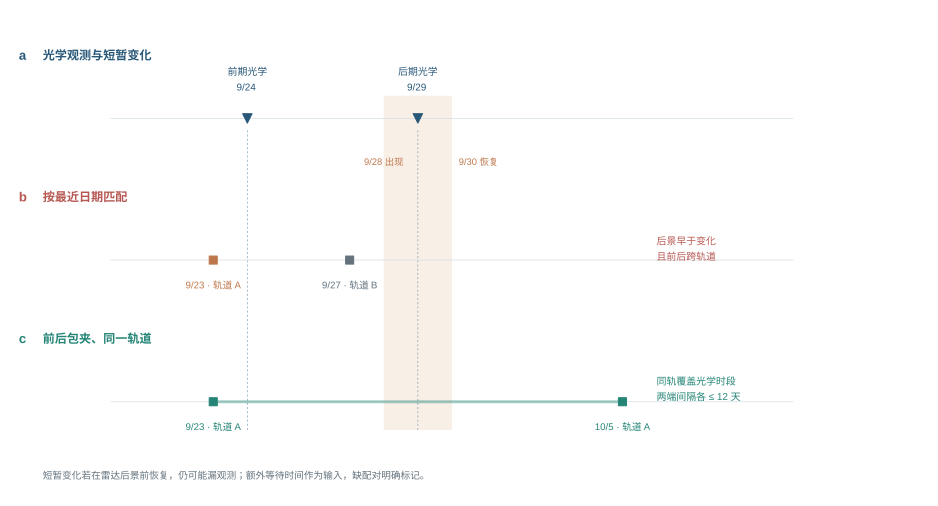
（7）时间划分
全部影像对按后期影像的日期排序，划分为三个折（表 6）。每一折中，训练集全部早于验证集，验证集全部早于测试集；跨越分界日期的影像对被剔除，前后共用同一期影像的影像对之间留出间隔，避免同一期影像同时出现在训练和测试中。三折的测试期依次为 2023 年 4—7 月、2023 年 11 月至 2024 年 3 月、2024 年 4 月以后，分别覆盖春夏、秋冬和之后两年多的长期情形。
表 6 按时间滚动的三折划分（影像对数 / 计入评价的变化像元数 / 含变化的影像对数）
| 折 | 训练期 | 验证期 | 测试期 | 训练 | 验证 | 测试 |
|---|---|---|---|---|---|---|
| 第一折 | 2022 年 10 月以前 | 2022 年 10 月—2023 年 3 月 | 2023 年 4—7 月 | 114 / 4,251 / 27 | 53 / 747 / 8 | 22 / 784 / 6 |
| 第二折 | 2023 年 10 月以前 | 2023 年 10 月 | 2023 年 11 月—2024 年 3 月 | 210 / 9,964 / 48 | 6 / 1,182 / 1 | 20 / 2,443 / 4 |
| 第三折 | 2023 年 11 月以前 | 2023 年 11 月—2024 年 3 月 | 2024 年 4 月以后 | 221 / 11,506 / 50 | 20 / 2,443 / 4 | 258 / 2,429 / 36 |
三折的测试规模差别很大（22、20 和 258 个影像对）。“三折平均 F1”让春夏、秋冬和长期三种情形的权重相同；“合并 F1”按像元数加权，主要反映第三折。2023 年 8—9 月的影像对只用于训练，没有进入任何一折的测试。
4.4.2 评价指标
只在标注为 0 或 1 的像元上统计：正确报出的变化像元数 TP，误报的像元数 FP，漏报的像元数 FN。
$$P=\frac{TP}{TP+FP},\quad R=\frac{TP}{TP+FN},\quad F1=\frac{2PR}{P+R},\quad \mathrm{IoU}_{\text{变化}}=\frac{TP}{TP+FP+FN}$$
- 主要指标：三折平均 F1。每次训练在每一折上分别计算 F1，对三折取平均，再对多次训练取平均。同时报告“合并 F1”：把三折的 TP、FP、FN 分别相加后再计算 F1。
- 平均精度 AP。把全部参评像元按变化概率从高到低排序，逐一作为门槛计算精确率和召回率，AP 按召回率增量对对应精确率加权求和（每一折分别计算，再取平均）。它不依赖门槛，用来比较模型本身的排序能力。
- 为什么变化检测不报总体精度和 mIoU。没有变化的像元占 99.9% 以上，任何方法的总体精度和“没变”类的 IoU 都高于 0.999，无法区分方法好坏 [35,36]，因此变化检测只报变化类的 IoU；分割则报五类的 mIoU 和总体精度。
- 事件指标。把标注中连在一起、不少于 4 个像元的变化区域算作一个“事件”，模型报出的变化覆盖该事件 30% 以上就算检出，由此得到事件检出率；模型报出的变化区域中，与任何标注变化都不重叠的区域所占比例，称为“误报斑块占比”。
- 分条件统计。按变化类型、测点、有雾与无雾的影像对、河岸带内外（距水陆分界 3 个像元以内为河岸带）分别统计。
4.5 第一步：什么都不加，哪个基础模型最好
条件：所有方法只输入前后两期影像（12 个波段；Changer 和 ChangeFormer 的预训练骨干只扩展到 6 个波段，读 B2、B3、B4、B8、B11、B12），不加任何辅助数据；用同样的训练标签、同样的损失函数和难负样本采样、同样的早停规则；OlmoEarth、U-Net 早融合和 TerraMind 各训练 3 次，明显落后、不可能改变结论的 Transformer 孪生网络只训练 1—2 次。表 7 列出结果。
表 7 直接检测第一步：什么都不加时各基础模型的成绩（两期 12 个波段；A 口径训练与评价；固定概率 0.5；三折平均，3 次训练平均，Transformer 孪生网络 1—2 次；F1 差相对 OlmoEarth）
| 配置 | 精确率 | 召回率 | 三折平均 F1 | AP | F1 差（95% 区间） | 训练次数 | 说明 |
|---|---|---|---|---|---|---|---|
| OlmoEarth + LoRA | 0.740 | 0.601 | 0.659 | 0.683 | — | 3 | 两期一起编码；令牌 40 m |
| U-Net 早融合（ResNet-34） | 0.725 | 0.494 | 0.576 | 0.532 | −0.083（−0.184 至 −0.017） | 3 | 两期叠在一起输入；从 ImageNet 预训练开始 |
| TerraMind + LoRA | 0.778 | 0.202 | 0.307 | 0.402 | −0.353（−0.427 至 −0.224） | 3 | 两期分别编码；令牌 160 m |
| Changer（MiT-b0） | 0.619 | 0.346 | 0.428 | 0.419 | −0.232（−0.340 至 −0.131） | 2 | Transformer 孪生网络，两期特征互相交换；只读 6 个波段，从 ImageNet 预训练开始 |
| ChangeFormer（MiT-b0） | 0.769 | 0.419 | 0.539 | 0.555 | −0.121（−0.209 至 −0.055） | 2 | Transformer 孪生网络，两期特征拼接后由 SegFormer 解码；只读 6 个波段，从 ImageNet 预训练开始 |
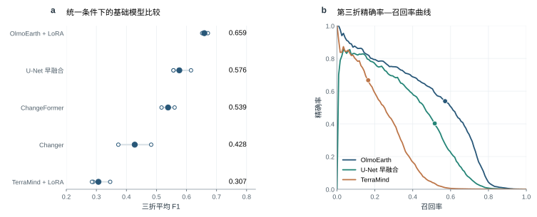
OlmoEarth 明显最好。OlmoEarth 的三折平均 F1 为 0.659，AP 为 0.683；U-Net 早融合为 0.576，TerraMind 只有 0.307；Transformer 孪生网络 Changer 为 0.428（2 次训练），ChangeFormer 为 0.539（2 次训练）。以下三项结构与数据差异有助于解释这一结果，当前实验未分别估计它们的独立贡献：
- 编码方式。OlmoEarth 把前后两期作为一个时间序列一起输入编码器，两期的令牌在每一层注意力中直接比较；TerraMind 对两期分别编码，只在解码器中比较。从 ImageNet 预训练开始的 U-Net 早融合仍需用本项目数百个影像对适应多光谱地表特征。
- 令牌大小。OlmoEarth 每个令牌代表 40 米 × 40 米，TerraMind 为 160 米 × 160 米。本研究的变化多只有几个像元宽，令牌越大，小片变化越容易被平均掉。TerraMind 召回率只有 0.202，正反映了这一点。
- 波段与预训练数据。Changer 和 ChangeFormer 的预训练骨干只扩展到 6 个波段，读不到红边等波段；它们和 U-Net 早融合一样从自然图像（ImageNet）预训练开始，没有见过卫星影像，而 Transformer 骨干通常比卷积网络需要更多训练数据。在数百个影像对上，两者都不如 U-Net 早融合。
4.6 第二步：在 OlmoEarth 上加入其他数据，哪些有用
条件：以 OlmoEarth（什么都不加）为基线，每次只加入一种数据，用最简单的接入方式（末端旁支，4.3.6 节）；其余设置与基线完全相同，各训练 3 次。表 8 的“说明”一栏列出每个配置具体加入的各层，每一层的定义见表 5。
表 8 直接检测第二步：在 OlmoEarth 上逐项加入其他数据（末端旁支接入；F1 差相对什么都不加，区间同时重抽训练次数与测试影像对）
| 配置 | 精确率 | 召回率 | 三折平均 F1 | AP | F1 差（95% 区间） | 训练次数 | 说明 |
|---|---|---|---|---|---|---|---|
| 什么都不加（基线） | 0.740 | 0.601 | 0.659 | 0.683 | — | 3 | 只输入前后两期的 12 个波段 |
| 光谱指数差（6 层） | 0.807 | 0.581 | 0.672 | 0.713 | +0.013（−0.032 至 +0.066） | 3 | NDVI、NDWI、MNDWI、BSI、短波红外减近红外、可见光亮度 6 个量的后期减前期 |
| 往年同期（7 层） | 0.743 | 0.612 | 0.667 | 0.678 | +0.008（−0.046 至 +0.036） | 3 | 前后两期 NDVI、MNDWI、BSI 相对往年同季的偏离（6 层）和后期可用的往年观测数（1 层） |
| 地形（5 层） | 0.722 | 0.629 | 0.669 | 0.692 | +0.010（−0.037 至 +0.051） | 3 | 相对高程、坡度、坡向正弦、坡向余弦、局部起伏 |
| 雷达（前后包夹、同一轨道，6 层） | 0.736 | 0.616 | 0.668 | 0.687 | +0.008（−0.056 至 +0.036） | 3 | VV 差、VH 差、交叉极化比差、前侧多出的天数、后侧多出的天数、有效标记 |
| 逐期光照与阴影（6 层） | 0.728 | 0.617 | 0.666 | 0.677 | +0.006（−0.042 至 +0.056） | 3 | 前后两期局部光照 cos i 及其差、前后两期投射阴影及其差 |
| 真实拍摄日期 | 0.675 | 0.631 | 0.643 | 0.669 | −0.017（−0.092 至 +0.034） | 3 | 两期实际成像的日、月、年作为时间编码 |
| 拍摄日期 + 雷达 | 0.703 | 0.621 | 0.657 | 0.678 | −0.002（−0.072 至 +0.067） | 3 | 真实拍摄日期（时间编码） + 雷达（前后包夹、同一轨道，6 层） |
| 前期之前 2 期影像 | 0.669 | 0.669 | 0.667 | 0.700 | +0.008（−0.076 至 +0.094） | 3 | 前期之前 90 天内最近 2 期较清楚影像的 12 个波段 |
| 指数差 + 往年同期（13 层） | 0.744 | 0.595 | 0.637 | 0.683 | −0.023（−0.082 至 +0.038） | 3 | 光谱指数差 6 层 + 往年同期 7 层 |
| 指数差 + 往年同期 + 地形（18 层） | 0.787 | 0.580 | 0.661 | 0.702 | +0.002（−0.050 至 +0.046） | 3 | 光谱指数差 6 层 + 往年同期 7 层 + 地形 5 层 |
注：“说明”一栏列出该配置加入的具体内容，每一层的定义和处理方法见表 5。
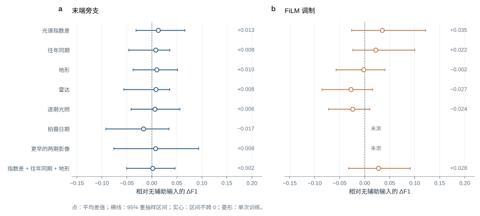
结果（表 8）：
- 简单融合下，没有一项数据带来可以确认的提高。逐项加入的 10 种数据（组合）中，F1 的变化在 −0.023 到 +0.013 之间，95% 区间都包含 0；用末端旁支接入时，单凭这些数据分不出高低。
- 光谱指数差最有希望。只加指数差时 F1 为 0.672（与什么都不加相比 +0.013，95% 区间 −0.032 至 +0.066），AP 从 0.683 升到 0.713，精确率从 0.740 升到 0.807。指数差由两期的波段直接算出，网络本可以自己学到；把它直接给出，相当于告诉网络“植被、水、裸土朝哪个方向变了”，减少了网络需要学习的内容。
- 雷达、拍摄日期没有带来提高。只加雷达为 0.668，把时间编码换成真实拍摄日期为 0.643，二者一起加入为 0.657。雷达的实际分辨率约 20 米，而多数变化只有 1—3 个像元宽；相邻两期间隔多为一周左右，季节差别本来就小，拍摄日期提供的信息有限。
- 往年同期、地形、逐期光照与更早的影像：往年同期 0.667（+0.008）；地形 0.669（+0.010）；逐期光照 0.666（+0.006）；前期之前 2 期影像 0.667（+0.008）。与什么都不加相比，差值都在训练次数之间的波动范围内（什么都不加的 3 次训练，F1 标准差为 0.010）。
组合。单独加入时没有一项被证实有用，组合只取差值较大、彼此含义不同的几项：光谱指数差（+0.013）、地形（+0.010）、往年同期（+0.008）。“指数差 + 往年同期”的 F1 为 0.637，“指数差 + 往年同期 + 地形”（18 层）为 0.661（AP 0.702），都没有超过只加指数差（0.672）：往年同期和地形加进来以后不起作用。因此第三步只用光谱指数差。
模型到底有没有用到这些数据。置换检验在测试时把某一项数据换成另一个影像对的数据（打乱），或全部置零，其余不变：如果模型依赖这项数据，成绩应明显下降。结果见表 9。最终方案（OlmoEarth + 光谱指数差（逐级相加））打乱指数差后 F1 从 0.703 降到 0.319，置零后降到 0.356，说明模型确实依赖指数差。在同时接入指数差和其他数据的模型里，多年地表统计被模型用到了（在“FiLM：指数差 + 多年地表统计”中打乱后 F1 下降 0.026，在“逐级相加：指数差 + 多年地表统计”中打乱后 F1 下降 0.012）；地形、往年同期、逐期光照、雷达打乱后 F1 几乎不变（下降不到 0.01），模型基本没有用到。多年地表统计虽然被用到，加入后的 F1（0.694）却没有超过只接指数差（0.695）：模型用它代替了一部分本来从指数差得到的信息，而没有带来新的信息。总体上，指数差已经提供了最直接的变化线索，其他数据提供的信息大多与它重复，这与第二步“单独加入这些数据没有带来可确认的提高”一致。
表 9 置换检验：测试时把某一组数据换成其他影像对的（打乱）或全部置零，F1 下降多少（固定概率 0.5，三折平均，各次训练平均）
| 模型 | 处理的数据 | 原样 F1 | 打乱后 | 下降 | 置零后 | 下降 | 折 × 次 |
|---|---|---|---|---|---|---|---|
| 逐级相加：指数差（最终方案） | 光谱指数差 | 0.703 | 0.319 | +0.383 | 0.356 | +0.346 | 9 |
| FiLM：指数差 | 光谱指数差 | 0.695 | 0.095 | +0.600 | 0.008 | +0.687 | 9 |
| 末端旁支：指数差 | 光谱指数差 | 0.672 | 0.459 | +0.213 | 0.447 | +0.225 | 9 |
| FiLM：指数差 + 多年地表统计 | 光谱指数差 | 0.694 | 0.122 | +0.571 | 0.003 | +0.690 | 9 |
| 多年地表统计 | 0.694 | 0.668 | +0.026 | 0.660 | +0.033 | 9 | |
| 全部辅助数据 | 0.694 | 0.111 | +0.583 | 0.061 | +0.633 | 9 | |
| FiLM：指数差 + 往年同期 | 光谱指数差 | 0.669 | 0.177 | +0.492 | 0.064 | +0.605 | 9 |
| 往年同期 | 0.669 | 0.664 | +0.005 | 0.679 | −0.011 | 9 | |
| 全部辅助数据 | 0.669 | 0.131 | +0.538 | 0.018 | +0.651 | 9 | |
| FiLM：指数差 + 雷达 | 光谱指数差 | 0.675 | 0.116 | +0.560 | 0.024 | +0.651 | 9 |
| 雷达 | 0.675 | 0.667 | +0.009 | 0.675 | −0.000 | 9 | |
| 全部辅助数据 | 0.675 | 0.104 | +0.572 | 0.023 | +0.653 | 9 | |
| FiLM：指数差 + 逐期光照 | 光谱指数差 | 0.648 | 0.092 | +0.556 | 0.018 | +0.630 | 9 |
| 逐期光照 | 0.648 | 0.656 | −0.008 | 0.645 | +0.003 | 9 | |
| 全部辅助数据 | 0.648 | 0.103 | +0.545 | 0.055 | +0.593 | 9 | |
| FiLM：指数差 + 往年同期 + 地形 | 光谱指数差 | 0.687 | 0.143 | +0.545 | 0.053 | +0.634 | 9 |
| 往年同期 | 0.687 | 0.677 | +0.010 | 0.694 | −0.006 | 9 | |
| 地形 | 0.687 | 0.677 | +0.010 | 0.678 | +0.009 | 9 | |
| 全部辅助数据 | 0.687 | 0.107 | +0.580 | 0.016 | +0.671 | 9 | |
| 逐级相加：指数差 + 多年地表统计 | 光谱指数差 | 0.660 | 0.210 | +0.450 | 0.164 | +0.496 | 9 |
| 多年地表统计 | 0.660 | 0.648 | +0.012 | 0.603 | +0.057 | 9 | |
| 全部辅助数据 | 0.660 | 0.229 | +0.431 | 0.218 | +0.442 | 9 | |
| 逐级相加：指数差 + 往年同期 + 地形 | 光谱指数差 | 0.641 | 0.246 | +0.395 | 0.245 | +0.396 | 9 |
| 往年同期 | 0.641 | 0.638 | +0.003 | 0.656 | −0.015 | 9 | |
| 地形 | 0.641 | 0.636 | +0.004 | 0.637 | +0.004 | 9 | |
| 全部辅助数据 | 0.641 | 0.245 | +0.396 | 0.252 | +0.389 | 9 | |
| 逐级相加：同上，训练时随机整组丢弃（指数差 0.5、其余 0.25） | 光谱指数差 | 0.677 | 0.646 | +0.031 | 0.653 | +0.024 | 9 |
| 往年同期 | 0.677 | 0.667 | +0.010 | 0.671 | +0.006 | 9 | |
| 地形 | 0.677 | 0.676 | +0.001 | 0.676 | +0.001 | 9 | |
| 全部辅助数据 | 0.677 | 0.624 | +0.053 | 0.628 | +0.049 | 9 | |
| 逐级相加：同上，较轻的随机整组丢弃（各组 0.2） | 光谱指数差 | 0.660 | 0.603 | +0.057 | 0.618 | +0.043 | 9 |
| 往年同期 | 0.660 | 0.659 | +0.001 | 0.666 | −0.006 | 9 | |
| 地形 | 0.660 | 0.661 | −0.001 | 0.663 | −0.003 | 9 | |
| 全部辅助数据 | 0.660 | 0.583 | +0.077 | 0.595 | +0.065 | 9 |
注：“原样 F1”为做了置换检验的那些训练的平均，未全部完成时可能与主表略有差别；下降不到 0.01 说明模型基本没有用到这组数据。“全部辅助数据”指该模型接入的各组同时打乱或置零。表中各组数据的具体内容——光谱指数差（6 层）：NDVI、NDWI、MNDWI、BSI、短波红外减近红外、可见光亮度 6 个量的后期减前期；往年同期（7 层）：前后两期 NDVI、MNDWI、BSI 相对往年同季的偏离（6 层）和后期可用的往年观测数（1 层）；地形（5 层）：相对高程、坡度、坡向正弦、坡向余弦、局部起伏；多年地表统计（7 层）：水体出现频率、NDVI 的 10%/50%/90% 分位数、BSI 中位数、耕作周期年份比例、无云观测次数；雷达（前后包夹、同一轨道，6 层）：VV 差、VH 差、交叉极化比差、前侧多出的天数、后侧多出的天数、有效标记；逐期光照与阴影（6 层）：前后两期局部光照 cos i 及其差、前后两期投射阴影及其差。每一层的定义和处理方法见表 5。
4.7 第三步：换融合方式，会不会进一步提高
条件：输入为第二步最有希望的光谱指数差，只改变接入方式（4.3.6 节）：末端旁支（第二步的做法，作为对照）、FiLM 调制、门控、交叉注意力和逐级相加，各训练 3 次。同样的比较也在“指数差 + 往年同期 + 地形”18 层（光谱指数差 6 层、往年同期 7 层、地形 5 层）上做了一遍，作为参照。
表 10 直接检测第三步：同样的输入、不同的融合方式（F1 差相对什么都不加）
| 配置 | 精确率 | 召回率 | 三折平均 F1 | AP | F1 差（95% 区间） | 训练次数 | 说明 |
|---|---|---|---|---|---|---|---|
| 什么都不加（基线） | 0.740 | 0.601 | 0.659 | 0.683 | — | 3 | |
| 只接光谱指数差（6 层：NDVI、NDWI、MNDWI、BSI、短波红外减近红外、可见光亮度 6 个量的后期减前期） | |||||||
| 末端旁支 | 0.807 | 0.581 | 0.672 | 0.713 | +0.013（−0.032 至 +0.066） | 3 | |
| FiLM 调制 | 0.792 | 0.630 | 0.695 | 0.735 | +0.035（−0.026 至 +0.122） | 3 | |
| 门控 | 0.725 | 0.667 | 0.683 | 0.722 | +0.023（−0.036 至 +0.099） | 3 | |
| 交叉注意力 | 0.718 | 0.584 | 0.624 | 0.682 | −0.035（−0.085 至 +0.006） | 3 | |
| 逐级相加 | 0.789 | 0.639 | 0.703 | 0.739 | +0.043（+0.004 至 +0.105） | 3 | |
| 接 18 层：光谱指数差 6 层 + 往年同期 7 层 + 地形 5 层 | |||||||
| 末端旁支 | 0.787 | 0.580 | 0.661 | 0.702 | +0.002（−0.050 至 +0.046） | 3 | |
| FiLM 调制 | 0.787 | 0.616 | 0.687 | 0.731 | +0.028（−0.032 至 +0.091） | 3 | |
| 门控 | 0.781 | 0.605 | 0.666 | 0.714 | +0.006（−0.067 至 +0.074） | 3 | |
| 交叉注意力 | 0.735 | 0.599 | 0.652 | 0.693 | −0.008（−0.072 至 +0.025） | 3 | |
| 逐级相加 | 0.804 | 0.540 | 0.641 | 0.681 | −0.019（−0.109 至 +0.034） | 3 | |
| 逐级相加的补充 | |||||||
| 指数差 + 往年同期 | 0.808 | 0.550 | 0.644 | 0.703 | −0.016（−0.103 至 +0.047） | 3 | 光谱指数差 6 层 + 往年同期 7 层 |
| 指数差 + 多年地表统计 | 0.784 | 0.585 | 0.660 | 0.707 | +0.001（−0.059 至 +0.074） | 3 | 光谱指数差 6 层 + 多年地表统计 7 层 |
| 18 层，训练时随机整组丢弃 | 0.744 | 0.636 | 0.677 | 0.710 | +0.018（−0.040 至 +0.086） | 3 | 每个训练样本按概率整组置零：指数差 0.5，往年同期、地形各 0.25 |
| 18 层，较轻的随机整组丢弃 | 0.746 | 0.611 | 0.660 | 0.707 | +0.001（−0.032 至 +0.061） | 3 | 指数差、往年同期、地形各 0.2 |
| 18 层，只丢弃指数差以外的组 | 0.802 | 0.579 | 0.668 | 0.711 | +0.009（−0.090 至 +0.055） | 3 | 指数差不丢，往年同期、地形各 0.25 |
| 雷达作为 OlmoEarth 的原生输入（进编码器） | |||||||
| 末端旁支只接指数差 + 原生雷达 | 0.778 | 0.591 | 0.662 | 0.700 | +0.003（−0.053 至 +0.045） | 3 | 与“末端旁支只接指数差”只差原生雷达：前侧景、后侧景的 VV、VH 作为 OlmoEarth 的雷达输入进入编码器 |
注：表中各组数据的具体内容——光谱指数差（6 层）：NDVI、NDWI、MNDWI、BSI、短波红外减近红外、可见光亮度 6 个量的后期减前期；往年同期（7 层）：前后两期 NDVI、MNDWI、BSI 相对往年同季的偏离（6 层）和后期可用的往年观测数（1 层）；地形（5 层）：相对高程、坡度、坡向正弦、坡向余弦、局部起伏；多年地表统计（7 层）：水体出现频率、NDVI 的 10%/50%/90% 分位数、BSI 中位数、耕作周期年份比例、无云观测次数；原生雷达（2 景 × 2 极化）：前侧景、后侧景的 VV、VH 作为 OlmoEarth 的雷达输入进入编码器。每一层的定义和处理方法见表 5。
结果（表 10）：
- 把指数差注入解码器各级，比只在末端接入好。只接指数差时，五种接法按 F1 从高到低依次为：逐级相加 0.703、FiLM 0.695、门控 0.683、末端旁支 0.672、交叉注意力 0.624。同样的指数差，用末端旁支接入时比什么都不加只高 0.013，逐级相加则高 0.043：数据相同，只换了接法，提高幅度约为原来的 3 倍。
- 逐级相加与 FiLM 不相上下。逐级相加的 F1 为 0.703（AP 0.739），与什么都不加相比差 +0.043，95% 区间 +0.004 至 +0.105，合并计算差 +0.041，95% 区间 +0.005 至 +0.086；FiLM 的 F1 为 0.695（AP 0.735），与什么都不加相比差 +0.035，95% 区间 −0.026 至 +0.122，合并计算差 +0.039，95% 区间 +0.005 至 +0.095。两者之间相差 +0.008（95% 区间 −0.054 至 +0.068），区间包含 0，分不出高低。两者的 F1 相差超过“打平”的 0.005（2.5 节），按统一阈值 0.5 下 F1 最高的规则，直接检测最终方案取“OlmoEarth + 光谱指数差（逐级相加）”。
- 在 18 层上，FiLM 是最好的接法。FiLM 为 0.687（AP 0.731），末端旁支为 0.661（AP 0.702）；其余三种依次为 门控 0.666、交叉注意力 0.652、逐级相加 0.641，都没有超过 FiLM。逐级相加在只接指数差时最好、在 18 层上却最差：直接相加会把往年同期和地形中与变化无关的起伏一并加到特征上，FiLM 的缩放和门控的开关则可以把它们压下去。
- 为什么注入解码器各级更好。末端旁支只在输出前加一个修正量，辅助数据只能改变“最后报不报”；逐级相加和 FiLM 在解码器的三级逐像元地调整特征，辅助数据可以改变网络“看什么”，例如在指数差显示植被减少的地方加强相应的特征。指数差本身就是很强、很直接的线索，平移（逐级相加）已经足够，缩放加平移（FiLM）没有带来更多；门控和交叉注意力的参数更多，在几百个影像对上更难训练好。
- 换成 FiLM 后，其他数据是否变得有用。第二步用的是最简单的末端旁支，其他数据没有作用，也可能是接法太弱。为排除这种可能，用 FiLM 把其他数据逐项加入，也和指数差一起加入（表 11）。单独加入时，与什么都不加相比：往年同期 +0.022，95% 区间 −0.024 至 +0.100；地形 −0.002，95% 区间 −0.057 至 +0.040；雷达 −0.027，95% 区间 −0.085 至 +0.016；逐期光照 −0.024，95% 区间 −0.072 至 +0.010；多年地表统计 +0.006，95% 区间 −0.052 至 +0.046；成像质量 −0.006，95% 区间 −0.062 至 +0.033。没有一项的区间不包含 0。和指数差一起接入时，没有一项超过只接指数差（0.695）：指数差 + 多年地表统计 0.694、指数差 + 地形 0.691、指数差 + 雷达 0.675、指数差 + 往年同期 0.669、指数差 + 逐期光照 0.648。换了接法，其他数据仍然没有带来可以确认的提高，第二步的判断（只有光谱指数差值得进入第三步）不变。
- 补充检验：其他数据没有用，是模型“偷懒”还是信息重复。指数差太强时，模型可能只学会用它，而没有去学其他数据（多模态学习中的“模态失衡”）。为区分这种情况和“信息确实重复”，补做三组实验：一是训练时按概率整组置零辅助数据（指数差 0.5，其余 0.25），逼模型学会用其他数据，并比较两种丢弃强度（各组都 0.2；指数差不丢、其余 0.25）；二是用逐级相加把往年同期、多年地表统计与指数差一起接入；三是把雷达作为 OlmoEarth 预训练时就支持的原生输入送进编码器，而不是从解码器旁边接入。结果（表 10 下部）：随机整组丢弃：F1 0.677，与光谱指数差（逐级相加）相比 −0.026（95% 区间 −0.090 至 +0.023），与不丢弃的 18 层逐级相加相比 +0.036；逐级相加接指数差 + 往年同期：F1 0.644，与光谱指数差（逐级相加）相比 −0.059（95% 区间 −0.168 至 −0.002）；逐级相加接指数差 + 多年地表统计：F1 0.660，与光谱指数差（逐级相加）相比 −0.043（95% 区间 −0.116 至 +0.005）；原生雷达：F1 0.662，与光谱指数差（末端旁支）相比 −0.010（95% 区间 −0.065 至 +0.032）；较轻的随机整组丢弃（都 0.2）：F1 0.660，与光谱指数差（逐级相加）相比 −0.043（95% 区间 −0.096 至 +0.007），与随机丢弃（指数差 0.5、其余 0.25）相比 −0.017；只丢弃指数差以外的组：F1 0.668，与光谱指数差（逐级相加）相比 −0.035（95% 区间 −0.153 至 +0.006），与随机丢弃（指数差 0.5、其余 0.25）相比 −0.009。雷达最可能在光学影像有雾时起作用，因此单独看有雾的 142 个测试影像对：加入原生雷达后 F1 为 0.541，不加为 0.582，相差 −0.041（95% 区间 −0.080 至 +0.005）；清楚的影像对上相差 +0.013。雷达在有雾时也没有帮助，“只在有雾时用雷达”这种按条件选用的做法也就没有意义。随机丢弃有没有让模型用上其他数据，要看置换检验（表 8 下部）：指数差 0.5、其余 0.25 的版本，打乱往年同期、地形后 F1 分别只下降 0.010 和 0.001；各组都 0.2 的版本分别为 0.001 和 −0.001，等于没有变化。与此同时，模型对指数差的依赖明显减弱：打乱指数差，F1 只下降 0.031，而不丢弃的 18 层逐级相加下降 0.395。也就是说，即使逼着模型去用，往年同期和地形也没有提供指数差以外的新信息；随机丢弃只是让模型少用了最有效的指数差，F1 随之下降。其他数据没有作用的原因是信息与指数差重复，而不是模型“偷懒”。直接检测的补充检验到此结束，最终方案不变。
表 11 FiLM 调制接入各种数据（F1 差相对什么都不加；每个配置 3 次训练）
| 配置 | 精确率 | 召回率 | 三折平均 F1 | AP | F1 差（95% 区间） | 训练次数 | 说明 |
|---|---|---|---|---|---|---|---|
| 什么都不加（基线） | 0.740 | 0.601 | 0.659 | 0.683 | — | 3 | 只输入前后两期的 12 个波段 |
| 指数差 + 一项 | |||||||
| 光谱指数差（只接这一项，6 层） | 0.792 | 0.630 | 0.695 | 0.735 | +0.035（−0.026 至 +0.122） | 3 | NDVI、NDWI、MNDWI、BSI、短波红外减近红外、可见光亮度 6 个量的后期减前期 |
| 指数差 + 多年地表统计（13 层） | 0.814 | 0.612 | 0.694 | 0.740 | +0.034（−0.024 至 +0.102） | 3 | 光谱指数差 6 层 + 多年地表统计 7 层 |
| 指数差 + 往年同期（13 层） | 0.817 | 0.575 | 0.669 | 0.714 | +0.009（−0.073 至 +0.062） | 3 | 光谱指数差 6 层 + 往年同期 7 层 |
| 指数差 + 地形（11 层） | 0.784 | 0.629 | 0.691 | 0.751 | +0.031（−0.033 至 +0.083） | 3 | 光谱指数差 6 层 + 地形 5 层 |
| 指数差 + 雷达（前后包夹，12 层） | 0.817 | 0.585 | 0.675 | 0.728 | +0.016（−0.070 至 +0.087） | 3 | 光谱指数差 6 层 + 雷达（前后包夹、同一轨道，6 层） |
| 指数差 + 逐期光照（12 层） | 0.770 | 0.584 | 0.648 | 0.700 | −0.011（−0.086 至 +0.060） | 3 | 光谱指数差 6 层 + 逐期光照与阴影 6 层 |
| 指数差 + 往年同期 + 地形（18 层） | 0.787 | 0.616 | 0.687 | 0.731 | +0.028（−0.032 至 +0.091） | 3 | 光谱指数差 6 层 + 往年同期 7 层 + 地形 5 层 |
| 全部 7 组（52 层） | 0.790 | 0.598 | 0.669 | 0.722 | +0.010（−0.037 至 +0.081） | 3 | 光谱指数差 6 层 + 往年同期 7 层 + 地形 5 层 + 雷达（前后包夹、同一轨道，6 层） + 逐期光照与阴影 6 层 + 多年地表统计 7 层 + 成像质量 15 层 |
| 单项（不接指数差） | |||||||
| 往年同期（7 层） | 0.731 | 0.650 | 0.682 | 0.712 | +0.022（−0.024 至 +0.100） | 3 | 前后两期 NDVI、MNDWI、BSI 相对往年同季的偏离（6 层）和后期可用的往年观测数（1 层） |
| 地形（5 层） | 0.723 | 0.622 | 0.658 | 0.687 | −0.002（−0.057 至 +0.040） | 3 | 相对高程、坡度、坡向正弦、坡向余弦、局部起伏 |
| 雷达（前后包夹，6 层） | 0.741 | 0.572 | 0.632 | 0.663 | −0.027（−0.085 至 +0.016） | 3 | VV 差、VH 差、交叉极化比差、前侧多出的天数、后侧多出的天数、有效标记 |
| 逐期光照与阴影（6 层） | 0.736 | 0.577 | 0.636 | 0.668 | −0.024（−0.072 至 +0.010） | 3 | 前后两期局部光照 cos i 及其差、前后两期投射阴影及其差 |
| 多年地表统计（7 层） | 0.735 | 0.616 | 0.666 | 0.689 | +0.006（−0.052 至 +0.046） | 3 | 水体出现频率、NDVI 的 10%/50%/90% 分位数、BSI 中位数、耕作周期年份比例、无云观测次数 |
| 成像质量（15 层） | 0.744 | 0.590 | 0.653 | 0.673 | −0.006（−0.062 至 +0.033） | 3 | 前后两期厚云、薄云、云影、缺测标记（8 层）和跨轨道、两期有雾、两期水面耀斑风险、相隔天数、配准平移量（7 层） |
注：表中各组数据的具体内容——光谱指数差（6 层）：NDVI、NDWI、MNDWI、BSI、短波红外减近红外、可见光亮度 6 个量的后期减前期；往年同期（7 层）：前后两期 NDVI、MNDWI、BSI 相对往年同季的偏离（6 层）和后期可用的往年观测数（1 层）；地形（5 层）：相对高程、坡度、坡向正弦、坡向余弦、局部起伏；雷达（前后包夹、同一轨道，6 层）：VV 差、VH 差、交叉极化比差、前侧多出的天数、后侧多出的天数、有效标记；逐期光照与阴影（6 层）：前后两期局部光照 cos i 及其差、前后两期投射阴影及其差；多年地表统计（7 层）：水体出现频率、NDVI 的 10%/50%/90% 分位数、BSI 中位数、耕作周期年份比例、无云观测次数；成像质量（15 层）：前后两期厚云、薄云、云影、缺测标记（8 层）和跨轨道、两期有雾、两期水面耀斑风险、相隔天数、配准平移量（7 层）。每一层的定义和处理方法见表 5。
4.8 直接检测的最终方案与详细结果
按 2.6 节的三步，直接检测的最终方案为：“OlmoEarth + 光谱指数差（逐级相加）”，在全部完成 3 次训练的直接检测方案中，它在统一阈值 0.5 下的三折平均 F1 最高。它的三折平均 F1 为 0.703（精确率 0.789、召回率 0.639），AP 为 0.739。表 12 给出各测试期的结果。
表 12 直接检测最终方案（OlmoEarth + 光谱指数差（逐级相加））的详细结果（A 口径，固定概率 0.5）
| 统计范围 | 精确率 | 召回率 | F1 | 说明 |
|---|---|---|---|---|
| 测试期 2023 年 4—7 月 | 0.944 | 0.715 | 0.812 | AP 0.872 |
| 测试期 2023 年 11 月—2024 年 3 月 | 0.817 | 0.601 | 0.692 | AP 0.771 |
| 测试期 2024 年 4 月以后 | 0.606 | 0.603 | 0.604 | AP 0.574 |
| 三折平均 | 0.789 | 0.639 | 0.703 | AP 0.739，变化类 IoU 0.549，3 次训练平均 |
| 三折像元合并 | 0.726 | 0.618 | 0.667 | |
| 事件（≥ 4 像元的变化区域） | — | 62.8% | — | 共 87 个事件；报出的斑块中 44.0% 不与任何标注变化重叠 |
| 测点：株洲南 | 0.526 | 0.471 | 0.495 | 552 个变化像元 |
| 测点：衡阳北 | 0.756 | 0.703 | 0.729 | 3,921 个变化像元 |
| 测点：韶关南 | 0.722 | 0.401 | 0.515 | 1,183 个变化像元 |
| 无雾影像对 | 0.843 | 0.605 | 0.704 | 4,199 个变化像元 |
| 有雾影像对 | 0.530 | 0.654 | 0.586 | 1,457 个变化像元 |
| 河岸带外 | 0.766 | 0.690 | 0.726 | 4,289 个变化像元 |
| 河岸带内 | 0.568 | 0.391 | 0.461 | 1,367 个变化像元 |
| 类型：新增裸露 | — | 0.671 | — | 4,303 个变化像元 |
| 类型：道路增加 | — | 0.711 | — | 340 个变化像元 |
| 类型：植被减少 | — | 0.627 | — | 458 个变化像元 |
| 类型：水域增加 | — | 0.124 | — | 391 个变化像元 |
| 类型：水域减少 | — | 0.568 | — | 591 个变化像元 |
| 误报所在的后期地物 | — | — | — | 水体 34%；植被 20%；耕地 4%；裸露 27%；建成 3%；无地物标注 13% |
注：河岸带指距水陆分界 3 个像元以内；一个变化区域可同时标有多个类型；“无地物标注”指后期影像没有地物标注的位置。
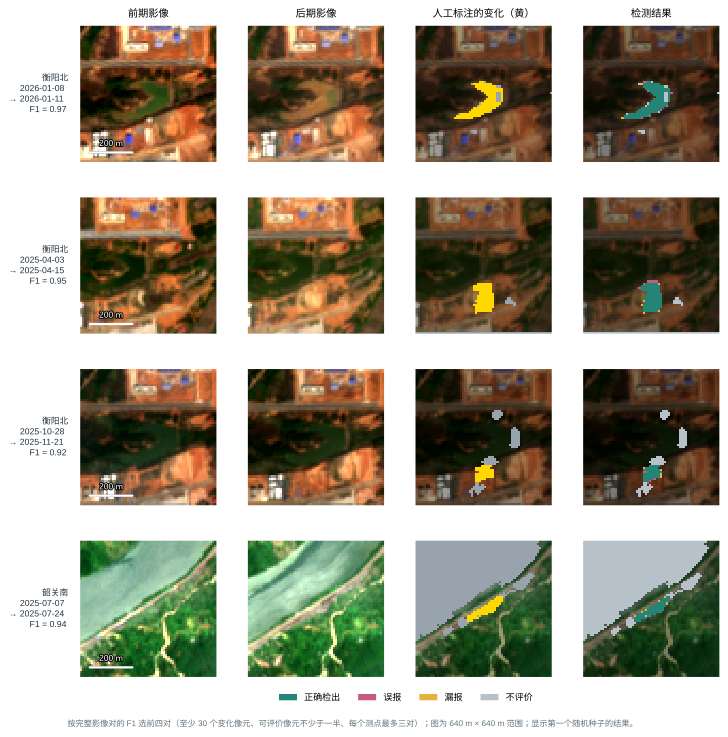
5 先分割后检测
5.1 研究进展
先分割后检测把变化检测拆成两个问题：先回答“每一期是什么地物”，再回答“两期之间是否发生了需要报告的变化”。已有研究大体有三种做法。
分类后比较。分别对两期影像做地物分类，再逐像元比较两张分类图，类别不同就判为变化 [37,38]。它直观，能直接说明“从什么变成了什么”，但两期分类的误差会叠加：在两期分类错误相互独立的简化情形下，每期 85% 的准确率对应两期同时分对约 72%；两期错误的实际相关性及误报数量，由本研究的直接比较实验统计。它还有一个先天的限制：类别不变的变化（林地局部清理、工地再次开挖）永远检测不到。
分割与判别分两步。先用分割网络得到每一期的地物概率，再用另一个模型（判别器）判断两期之间是否发生了变化；判别器除了地物概率，还可以读取光谱变化和周围像元的信息。Daudt 等在大范围语义变化检测中比较了多种训练顺序，其中“先训练分割、固定后再训练变化判别”的做法与本研究最接近 [39]。
语义变化检测网络。用一个网络同时输出两期的地物类别和变化区域，两项任务共用同一个特征提取部分，例如 HRSCD [39]、针对 SECOND 数据集的非对称孪生网络 [1] 和 Bi-SRNet [40]。它需要两期都有逐像元的地物标注，也需要较多的训练数据。
本研究的大部分影像（480 期中的 424 期）有逐像元的五类地物标注，三种做法都可以实现。分类后比较在 5.3.2 节检验；语义变化检测网络要同时学习两项任务，需要的训练数据更多，本研究的影像对只有数百个，暂不采用。本章采用第二种做法：逐期分割 + 候选像元 + 判别器。
5.2 方法概览
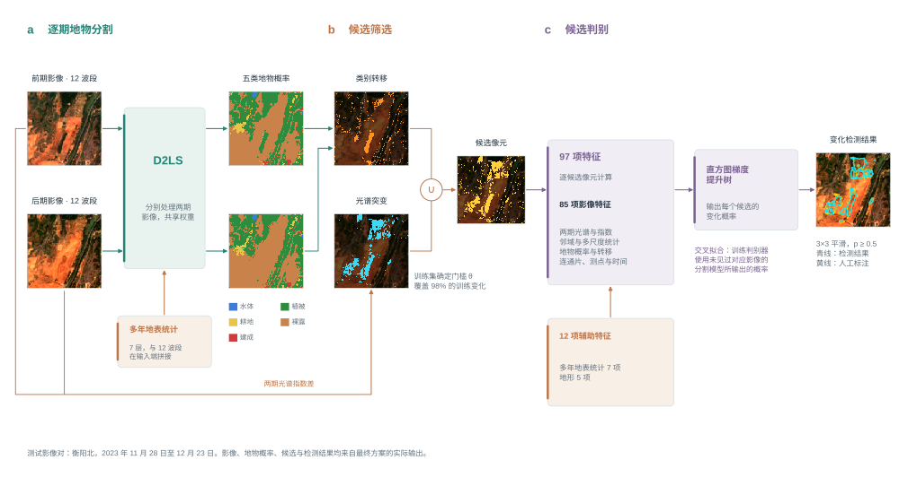
方法分三步（图 14）：
- 逐期地物分割：用分割网络对前后两期影像分别输出每个像元属于五类地物（水体、植被、耕地、裸露、建成）的概率；
- 选出候选像元：两期类别发生转移，或光谱发生明显突变的像元，进入候选；其余像元直接判为没有变化；
- 判别：对每个候选像元计算 85 项影像特征（最终方案另加 12 项辅助数据特征：多年地表统计 7 项、地形 5 项），由判别器判断它是不是真实的地表变化。
这三步决定了本章实验的顺序（2.6 节）：先比较分割模型（第一步），再在最好的分割模型上加入其他数据（第二步）和换融合方式（第三步），得到分割的最终方案；最后在这个分割方案上比较判别器（第四步）。
5.3 每一步怎么做、为什么这样做
5.3.1 逐期地物分割：D2LS
D2LS（动态字典分割网络）是 2025 年计算机视觉国际会议（ICCV）上发表的遥感语义分割方法 [41]。它的核心思想是：每一类地物的“参照样子”不是固定的，而是根据当前这幅影像自动调整。同一测点的植被会随季节和成像条件改变外观，动态字典为这种变化提供了自适应的类别参照。在 5.5 节统一训练条件的比较中，它是分割精度最高的模型。
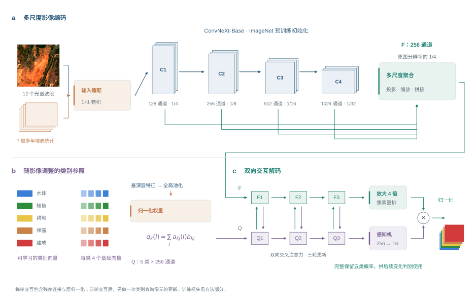
特征提取。D2LS 用 ConvNeXt-Base [42] 卷积网络提取特征。它分四个阶段，特征维数依次为 128、256、512、1024，对应原图 1/4、1/8、1/16、1/32 的尺寸：前面的阶段保留道路、田埂和水边线等细节，后面的阶段汇集更大范围的地物背景。四个阶段的特征统一到 256 维、放大到原图 1/4 的尺寸后合并，得到特征图 $F$。网络参数从 ImageNet 预训练结果开始训练。读取 12 个波段时，输入前加一个 1×1 卷积把 12 个波段映射为 3 个通道，初值只取红、绿、蓝三个波段，其余波段的权重从 0 开始学习，训练开始时与只读 RGB 的网络完全相同。
随影像调整的类别参照（动态字典）。每类地物有 4 个可学习的参照向量 $b_{k1},\dots,b_{k4}$。网络读取当前影像最深层的特征，算出每类 4 个参照向量的权重（合计为 1），加权得到这幅影像中该类地物的参照：
$$q_k(I)=\sum_{j=1}^{4}a_{kj}(I)\,b_{kj},\qquad \sum_{j=1}^{4}a_{kj}(I)=1$$
本研究的输入适配。ConvNeXt-Base 的预训练权重只接受三个通道。分割最终方案在输入端把 12 个波段和 7 项多年地表统计（图 16）拼在一起，经一个可学习的 1 × 1 卷积（适配层）压成三个通道再送入 ConvNeXt；适配层的初始权重只把红、绿、蓝三个波段原样传入，其余通道的权重为零，因此训练开始时与只读 RGB 的网络相同，其余波段和多年统计的作用在训练中学出来。
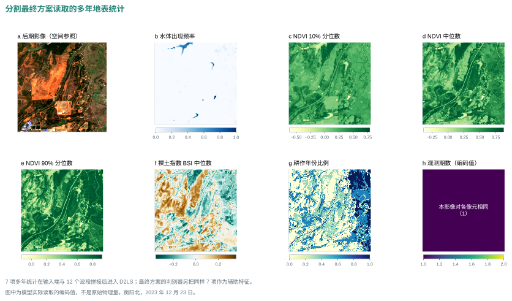
参照与像元相互更新。五类参照 $Q$ 先在特征图中寻找属于本类的证据，像元特征 $F$ 再从更新后的参照中获取类别信息，每轮包含类别查询像元、像元查询类别两个交叉注意力步骤，采用 8 个注意力头与残差、层归一化，重复三轮；实现中另有一次最终的类别查询像元更新。核心双向更新可写为：
$$Q'=\mathrm{LN}[Q+\mathrm{Attn}(Q,F,F)],\qquad F'=\mathrm{LN}[F+\mathrm{Attn}(F,Q',Q')]$$
其中 Attn 是 4.3.4 节介绍的注意力计算，LN 是一种把数值调整到稳定范围的归一化操作。
输出五类概率。特征图经两次 2 倍放大恢复到原分辨率，与五类参照逐像元计算相似度，再经 softmax 转换为五类概率 $p_k$。后续判别使用完整的五类概率，而不只是概率最大的那一类：同样判为植被，概率 0.95 和 0.40 的像元含义很不一样。
训练。训练目标包括三部分：主输出与标注的交叉熵、只用固定参照时的输出与标注的交叉熵（权重 0.4），以及让同类参照在不同影像间更接近、不同类参照更分开的一项（权重 0.1）。所有分割模型使用统一的训练条件：每批 8 个 256 × 256 像元的图块，训练 4000 步；学习率从 3 个候选值中按开发期的分割精度选定（5.5 节）。
交叉拟合。训练判别器时，需要训练期每一期影像的地物概率。如果用已经在这些影像上训练过的分割模型去预测它们，概率会“过于准确”，与测试时面对新影像的真实误差不一致，判别器就学不到如何应对分割错误。因此，把训练期和验证期的影像按季度分成两半：用前一半训练的分割模型预测后一半，用后一半训练的模型预测前一半；判别器的训练使用这样得到的概率。测试期影像则用在全部训练期和验证期影像上训练的分割模型预测。这样，判别器在训练时看到的分割误差与测试时一致。
5.3.2 为什么不能直接比较两期类别
最直接的做法是：两期类别不同就判为变化。在三折测试期上，这样做报出 452,054 个变化像元，其中真变化只有 2,009 个，精确率 0.4%；召回率也只有 0.355（表 13）。每报出 225 个像元，只有 1 个是真的。原因有三。
表 13 从直接比较两期类别到候选与判别（三折测试期像元合并；A 口径；分割为D2LS（12 个波段 + 多年地表统计））
| 做法 | 判为变化的像元 | 精确率 | 召回率 | F1 |
|---|---|---|---|---|
| 全部参评像元都判为变化 | 10,766,885 | 0.053% | 1.000 | — |
| 两期类别不同即变化 | 452,054 | 0.44% | 0.355 | 0.009 |
| 同上，植被与耕地互转不算 | 346,960 | 0.57% | 0.348 | 0.011 |
| 候选像元全部当作变化（类别转移或光谱突变） | 1,558,587（占 14.5%） | 0.34% | 0.941 | 0.007 |
| 候选像元 + 梯度提升树判别（判别器另加辅助数据，最终方案） | — | 74.9% | 0.665 | 0.704 |
（1）变化太稀少。测试期变化像元只占参评像元的 0.053%。直接比较时，没有变化的像元被错报为变化的比例实测为 4.2%；而要达到 0.7 的精确率，这个比例必须低于 0.0135%，两者相差约 309 倍（图 17a）。每一期 85% 左右的分割精度，放到两期比较上远远不够。
（2）误报来自分割在类别分界处的来回摇摆。把误报按“前期类别 → 后期类别”统计（图 17b），结果几乎对称：植被→裸露 91,059 个、裸露→植被 94,922 个；植被→耕地 51,848 个、耕地→植被 53,207 个；裸露→建成 30,520 个、建成→裸露 29,876 个。真实的地表变化是有方向的（施工是植被变成裸露，不会同时有同样多的裸露变回植被），对称的结果说明这些误报是两期分割在混合像元和类别分界处随机摇摆造成的。
（3）大部分真实变化前后类别相同。召回率只有 0.355，是因为 64% 的真实变化在两期分割图上属于同一类：林地局部清理后仍是植被，工地再次开挖后仍是裸露。只比较类别，这部分变化无论分割多准都检测不到。加入多年地表统计的分割更容易把前后两期分成同一类（5.9 节），这一比例因此更高。
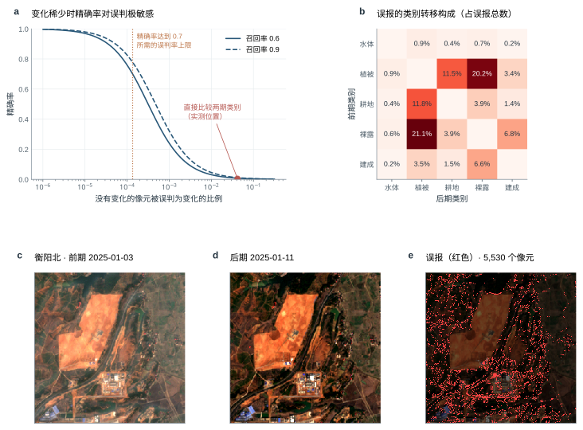
所以分割之后还需要两步：用候选规则保住类别不变的变化，用判别器删掉类别摇摆造成的误报。
5.3.3 候选像元：宁可多选，不可漏选
候选这一步用简单规则保住几乎全部真实变化，同时把明显没有变化的像元直接排除，让判别器只需在候选中区分真伪。像元满足以下任一条件就进入候选：
- 类别转移：两期概率最大的类别不同。植被和耕地之间的互相转变不算，因为二者在 10 米分辨率下光谱相近，互相转变多由季节造成；
- 光谱突变：6 项两期差值——NDVI、MNDWI、BSI、可见光亮度（B2、B3、B4 均值）之差和 B11、B12 两个短波红外波段的反射率之差——各自在本影像对两期都无云的像元上减中位数、除以 1.4826 倍中位数绝对偏差（截到 ±8），6 项绝对值的最大值 $z_{\max}$ 不小于门槛 $\theta$。
门槛 $\theta$ 只用训练集确定：取能让训练集中 98% 的变化像元进入候选的值。表 13 中“候选像元全部当作变化”一行是候选这一步的效果：需要判别的像元缩小到全部像元的 14.5%，同时保留了测试期 94.1% 的真实变化。第二条“光谱突变”专门为类别不变的变化而设：它们在分割图上看不出来，但光谱指数发生了明显跳变。
5.3.4 判别器：删掉假转移，补回同类变化
判别器对每个候选像元计算 85 项影像特征（表 14；最终方案另加 12 项辅助数据特征——多年地表统计 7 项、地形 5 项，见 5.8 节），回答两个问题：地物类别是否变了；光谱是否确实变了、变化是否连成一片。
表 14 判别器的 97 项特征（* 为最终方案另加的辅助数据，见 5.8 节）
| 特征组 | 数量 | 内容 | 作用 |
|---|---|---|---|
| 两期光谱 | 12 | 前期、后期的 B2、B3、B4、B8、B11、B12 反射率（各 6 项） | 保留可见光、近红外和短波红外的原始信息 |
| 指数及差值 | 12 | NDVI、MNDWI、BSI、可见光亮度（B2、B3、B4 均值）4 个量的前期值、后期值和后期减前期（各 4 项） | 描述植被、水分、裸土和亮度的状态与变化方向 |
| 稳健异常 | 7 | NDVI、MNDWI、BSI、可见光亮度之差与 B11、B12 反射率之差共 6 项，各自在本影像对两期都无云的像元上减中位数、除以 1.4826 倍中位数绝对偏差（截到 ±8）；以及 6 项绝对值的最大值 $z_{\max}$ | 判断变化相对于本影像对大多数像元是否异常 |
| 初级邻域统计 | 5 | $z_{\max}$ 的 3 × 3、9 × 9 均值，NDVI 异常、BSI 异常的 3 × 3 均值，NDVI 差的 3 × 3 标准差 | 区分孤立噪点与成片变化 |
| 多尺度邻域 | 17 | NDVI、BSI、亮度三项异常与 $z_{\max}$ 在 5、11、21 像元窗口内的均值（12 项），前期、后期 NDVI 与亮度的 11 像元均值（4 项），后期亮度的 5 像元标准差（1 项） | 结合近处细节与较大范围背景 |
| 地物概率与转移 | 23 | 前期、后期各五类（水体、植被、耕地、裸露、建成）的类别标记与概率（20 项），两期概率向量的内积，类别转移标记（耕地与植被互换不算），转移标记的 7 × 7 邻域均值 | 判断地物是否改变、往什么方向改变 |
| 候选连通片 | 3 | 所在候选连通片（8 邻接）的面积（ln(1 + 像元数)）、片内 $z_{\max}$ 的均值、片内类别转移像元的比例 | 利用变化斑块的整体属性 |
| 测点与时间 | 6 | 三个测点的独热编码（3 项），后期日序的正弦与余弦（2 项），两期间隔天数 ln(1 + 天数)（1 项） | 提供季节与观测间隔背景 |
| 多年地表统计 * | 7 | ① 水体出现频率（MNDWI > 0.1 且 NDVI < 0.2 的观测所占比例）；② NDVI 的 10% 分位数；③ NDVI 中位数；④ NDVI 的 90% 分位数；⑤ BSI 中位数；⑥ 有“一绿一裸”耕作周期的年份比例（某年至少 4 次无云观测、NDVI 最高 ≥ 0.6 且最低 ≤ 0.3，记为一个耕作年）；⑦ 无云观测次数 / 50（截到 1）。只用该影像对前期（含）以前的无云观测；观测不足 3 次的像元 ①—⑥ 为 0 | 提供“这里多年来通常是什么”的背景 |
| 地形 * | 5 | ① 相对高程（高程减测点中位数后 / 50 米，截到 ±1）；② 坡度 / 45°；③ 坡向正弦；④ 坡向余弦（③④ 乘以 min(坡度 / 10°, 1)，平地为 0）；⑤ 局部起伏 / 30 米（截到 1）。同一测点各影像对相同，不随时间变 | 提示陡坡阴影和地形位置 |
注：5.8 节还检验过往年同期（7 项：前后两期 NDVI、MNDWI、BSI 相对往年同季的偏离（6 层）和后期可用的往年观测数（1 层））和离铁路距离（1 项：像元到铁路中线的距离），二者对检测没有作用，最终方案未采用；另检验过雷达（7 项：VV 差及其 5 × 5 均值、后侧景 VV，VH 的同样 3 项，有效标记），与不加打平，也未采用。
判别器做了两件事。按两期分割类别是否相同，把测试期的真实变化分成两组，分别统计判别后的检出比例（图 18）：
- 删掉假转移。分割判为两期类别不同、实际没有变化的像元有 450,045 个，判别后只剩 417 个，删掉了 99.91%；同一组中的真实变化保留了 77%。
- 补回同类变化。分割判为两期类别相同的真实变化有 3,647 个，直接比较类别时一个也检测不到；判别器依靠光谱突变和邻域特征找回了 60%。最终检出的真实变化中，59% 来自分割判为同类的像元。
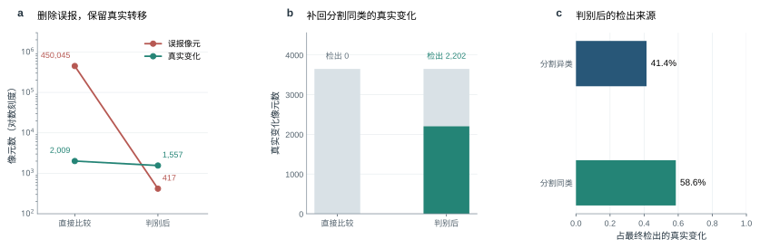
梯度提升树的原理。本章采用的判别器是梯度提升树 [43]。它由许多棵小决策树依次组成，每一棵新树专门学习前面所有树还没有分对的部分，再按一个较小的比例（学习率）加到已有的结果上：
$$F_m(x)=F_{m-1}(x)+\eta\,h_m(x)$$
其中 $F_m$ 是加入第 $m$ 棵树后的结果，$h_m$ 是第 $m$ 棵树，$\eta$ 是学习率。本研究使用的“直方图”版本先把每个特征的取值分成最多 255 段，再在段与段的分界上寻找最佳的分裂点，训练速度快，并且可以直接处理缺失值。85 项特征来源各异（反射率、指数、概率、面积的量纲都不同），属于“表格数据”；在这类中等规模的表格数据上，树模型通常比深度网络更好 [44]。5.8 节在同一份特征上比较了 8 种判别器。
设置。最多 500 棵树，学习率 0.05；每棵树最多 15 个叶节点、每个叶节点至少包含 300 个样本，L2 正则系数 5；按变化和没变两类的样本数平衡权重；留出 10% 训练样本，成绩不再提高时提前停止。训练样本取训练集候选像元中的全部变化像元，以及每个影像对最多 8000 个没变的像元。
后处理。候选以外的像元变化概率记为 0；候选内的概率与 3 × 3 邻域平均值各占一半，去除孤立的噪点；概率不小于 0.5 判为变化。
5.4 数据
先分割后检测使用与第 4 章相同的影像对、配准方法、变化标注和时间划分（4.4.1 节），另外用到两类数据：
- 五类地物标注：用于训练分割模型。每一折只用该折训练期和验证期的地物标注，测试期的地物标注不参与任何训练。分割精度在测试期的 291 期影像上评价；
- 辅助数据：多年地表统计、往年同期、地形、当期无云标记和前一期影像，在分割第二步中逐项检验（5.6 节）；它们的制作和对齐方法见表 4。
判别器的光谱特征取 B2、B3、B4、B8、B11、B12 六个波段，分别为蓝、绿、红、近红外和两个短波红外波段。判别器用 A 口径标签训练（2.4 节）。
5.5 分割第一步：只输入影像，哪个分割模型最好
条件。所有模型只输入影像本身，分 12 个波段和 RGB 两种；用同样的五类地物标注、同样的切块（256 × 256 像元）、同样的训练步数（4000 步，每批 8 块）；每个模型在 3 个学习率中按开发期的分割精度选一个，再用 3 个随机种子训练（明显落后、不会影响选择的模型只训练 1 次，表中注明）。这样每个模型都在相同的预算下发挥出各自的水平，比较的只是模型本身。评价指标是五类的平均交并比 mIoU（测试期三折平均）。
参与比较的模型以近两年的前沿方法为主，U 形网络只保留一个强基线：
- D2LS（ICCV 2025）[41]：动态字典分割，5.3.1 节；
- SegFormer-B2 [45]：分层 Transformer 编码器加轻量的全多层感知机解码器，是语义分割中最常用的 Transformer 基线；
- SAM 3.1 + LoRA [46]：Meta 的通用分割大模型，只读 RGB，编码器冻结、加低秩适配；
- Swin V2 UPerNet [47]：Swin V2 编码器加金字塔融合解码器；
- ResNet-34 U-Net [48]：U 形网络强基线。
表 15 分割第一步：只输入影像时各分割模型的分割精度（统一训练条件；测试期三折平均 mIoU ± 种子间标准差（训练次数））
| 模型 | 12 个波段 | RGB | 水体 IoU | 植被 IoU | 耕地 IoU | 裸露 IoU | 建成 IoU |
|---|---|---|---|---|---|---|---|
| D2LS | 0.779 ± 0.001（3） | 0.759 ± 0.001（3） | 0.827 | 0.878 | 0.819 | 0.711 | 0.658 |
| ResNet-34 U-Net | 0.762 ± 0.003（3） | 0.745 ± 0.001（2） | 0.813 | 0.870 | 0.823 | 0.684 | 0.621 |
| Swin V2 UPerNet | 0.714 ± 0.001（3） | — | 0.768 | 0.837 | 0.784 | 0.640 | 0.541 |
| SegFormer-B2 | 0.708（1） | — | 0.765 | 0.834 | 0.775 | 0.639 | 0.526 |
| SAM 3.1 + LoRA | — | 0.597（1） | 0.580 | 0.754 | 0.708 | 0.546 | 0.398 |
注：五类 IoU 取该模型较好的一种输入。统一训练条件：256 × 256 像元切块、每批 8 块、4000 步，学习率在 3 个候选值中按开发期分割精度选定。
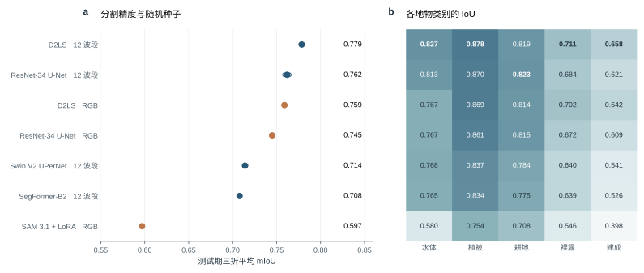
结果（表 15、图 19）：
- D2LS 读 12 个波段最好。mIoU 为 0.779，比读 RGB 的 D2LS（0.759）高 0.020；三个种子之间只差 0.001。12 个波段带来的提高集中在两类地物：水体 IoU 高 0.060、建成 IoU 高 0.015（其余三类相差不到 0.009）。短波红外对水分和建筑材料最敏感，这正是 RGB 缺少的信息。
- U 形网络是很强的基线。ResNet-34 U-Net 读 12 个波段为 0.762，与读 RGB 的 D2LS（0.759）相当，高于 Swin V2 UPerNet 和 SegFormer 两个 Transformer 模型。
- 在自然图像上预训练的模型明显落后。SegFormer-B2 读 12 个波段为 0.708；通用分割大模型 SAM 3.1 只读 RGB，mIoU 为 0.597。它们是在米级以下的自然图像上预训练的，10 米像元中的地物细节远少于预训练时见过的图像；SAM 3.1 又只能读 RGB，用不上近红外和短波红外。
- 各类别的难度一致。所有模型都是植被最好，水体、耕地其次，建成和裸露最差（D2LS 12 波段的五类 IoU 依次为 0.827、0.878、0.819、0.711、0.658）。建成和裸露光谱相近，又常与植被混在同一个 10 米像元里，是分割误差的主要来源。
结论：分割第一步选 D2LS（12 个波段）。
5.6 分割第二步：在 D2LS 上加入其他数据，哪些有用
条件。以 D2LS（12 个波段，什么都不加）为基线，每次加入一组数据；用最简单的接法：把辅助数据作为额外的输入通道与 12 个波段拼在一起，经 1×1 卷积映射后进入网络，新增通道的权重从 0 开始学习（训练开始时与基线完全相同）。其余设置与第一步相同。候选数据：
- 多年地表统计（7 层）：水体出现频率、植被指数的 10%、50%、90% 分位数、裸土指数中位数、耕作年份比例和观测期数，描述“这里多年来通常是什么”；
- 往年同期（7 层）：影像对前后两期各自相对往年同一季节的植被、水体、裸土指数偏离，以及可用的往年期数，描述“这个季节通常是什么样、现在是否反常”。它按影像对计算、含后期影像的信息，因此只在后期影像上提供，预测前期影像时置零，避免用到未来数据；
- 地形（5 层）：相对高程、坡度、坡向的正弦和余弦、局部起伏；
- 当期无云标记（1 层）：该期影像每个像元是否无云，提示哪里不可信；
- 前一期影像（12 层 + 1 层无云标记）：同一测点 180 天内最近一期无云比例不低于 20% 的影像，让网络参考“上一次是什么”。
前三类与直接检测使用的是同一份数据（制作方法见表 4）。
表 16 分割第二步：在 D2LS（12 个波段）上逐项加入其他数据（输入端拼接；差值为同一折上与基线的 mIoU 之差）
| 加入的数据 | 具体内容 | mIoU | 同折基线 | 差 | 已完成 | 每折 mIoU |
|---|---|---|---|---|---|---|
| 什么都不加（基线） | 当期影像的 12 个波段 | 0.779 | — | — | 三折 × 3 次 | 2023 年 4—7 月 0.786；2023 年 11 月—2024 年 3 月 0.796；2024 年 4 月以后 0.754 |
| 多年地表统计（7 层） | 水体出现频率、NDVI 的 10%/50%/90% 分位数、BSI 中位数、耕作周期年份比例、无云观测次数 | 0.803 | 0.779 | +0.025 | 3 折 × 3 次 | 2023 年 4—7 月 0.813；2023 年 11 月—2024 年 3 月 0.827；2024 年 4 月以后 0.770 |
| 往年同期（7 层） | 前后两期 NDVI、MNDWI、BSI 相对往年同季的偏离（6 层）和后期可用的往年观测数（1 层）；只给后期影像，预测前期影像时整组置零 | 0.783 | 0.779 | +0.005 | 3 折 × 2 次 | 2023 年 4—7 月 0.789；2023 年 11 月—2024 年 3 月 0.801；2024 年 4 月以后 0.759 |
| 地形（5 层） | 相对高程、坡度、坡向正弦、坡向余弦、局部起伏 | 0.783 | 0.779 | +0.005 | 3 折 × 3 次 | 2023 年 4—7 月 0.789；2023 年 11 月—2024 年 3 月 0.801；2024 年 4 月以后 0.759 |
| 当期无云标记（1 层） | 当期影像逐像元是否无云 | 0.778 | 0.779 | −0.001 | 3 折 × 2 次 | 2023 年 4—7 月 0.786；2023 年 11 月—2024 年 3 月 0.795；2024 年 4 月以后 0.753 |
| 前一期影像（12 + 1 层） | 180 天内最近一期较清楚影像的 12 个波段和该期无云标记 | 0.783 | 0.779 | +0.005 | 3 折 × 3 次 | 2023 年 4—7 月 0.791；2023 年 11 月—2024 年 3 月 0.803；2024 年 4 月以后 0.756 |
| 前四项一起加入（20 层） | 多年地表统计 7 层 + 往年同期 7 层 + 地形 5 层 + 当期无云标记 1 层 | 0.806 | 0.779 | +0.027 | 3 折 × 3 次 | 2023 年 4—7 月 0.814；2023 年 11 月—2024 年 3 月 0.831；2024 年 4 月以后 0.773 |
注：差值都与同一折上的基线比较。输入中多年地表统计的观测次数、往年同期的往年观测数各再复制一个通道（共 8 个通道），每一层的定义见表 5。
结果（表 16）：
- 多年地表统计带来明显提高。加入后 mIoU 为 0.803，同一批测试期上的基线为 0.779，提高 0.025（已完成 3 折 × 3 次训练，每一折、每一次训练都高于基线所有种子中最好的一次）。它直接告诉网络“这里多年来通常是植被还是裸土、是否常年有水”，弥补了单期影像在雾、阴影和季节变化下的不确定性。
- 当期无云标记没有作用。加入后 mIoU 为 0.778，与基线（0.779）相同。
- 往年同期、地形和前一期影像：往年同期 +0.005（3 折 × 2 次）；地形 +0.005（3 折 × 3 次）；前一期影像 +0.005（3 折 × 3 次）。三项都只比基线高 0.005 以内，与不同随机种子之间的差别相当，可以判断没有明显作用；这类不会改变结论的配置训练 2—3 次。
组合。四项一起加入（多年地表统计、往年同期、地形和无云标记）的 mIoU 为 0.806，比基线高 0.027（3 折 × 3 次），与只加多年地表统计（高 0.025）接近：提高主要来自多年地表统计，其余三项加进来作用很小。
5.7 分割第三步：换融合方式
条件。输入为第二步证实有用的多年地表统计，只改变接入方式：输入端拼接（第二步的做法，作为对照）；FiLM 调制、门控和双分支相加三种接法则让 12 个波段照常进入 ConvNeXt，多年地表统计另经两层卷积编码到 1/4 分辨率，在 D2LS 把四个尺度合并成特征图之后接入，公式与直接检测相同（4.3.6 节），接入层从 0 开始学习。其余设置不变。每种接法先训练 1 次，明显好于输入端拼接的再补到 3 次。
表 17 分割第三步：多年地表统计的四种接法（D2LS 12 个波段；所有差值都在同一批测试折上计算）
| 接法 | mIoU | 比什么都不加 | 比输入端拼接 | 已完成 |
|---|---|---|---|---|
| 输入端拼接（第二步的接法，对照） | 0.803 | +0.025 | — | 3 折 × 3 次 |
| FiLM 调制 | 0.799 | +0.020 | −0.005 | 3 折 × 1 次 |
| 门控 | 0.799 | +0.021 | −0.004 | 3 折 × 1 次 |
| 双分支相加 | 0.797 | +0.019 | −0.006 | 3 折 × 1 次 |
注：FiLM、门控、双分支都把多年地表统计经两层卷积编码到 1/4 分辨率，在 D2LS 四个尺度合并后的特征图上接入，接入层从 0 开始学习（训练开始时等于不加辅助数据）。未完成三折的接法只和输入端拼接在已完成的折上比较。多年地表统计的具体内容——多年地表统计（7 层）：水体出现频率、NDVI 的 10%/50%/90% 分位数、BSI 中位数、耕作周期年份比例、无云观测次数。每一层的定义和处理方法见表 5。
在已完成的折上，与输入端拼接相比：FiLM 调制 −0.005（3 折 × 1 次）；门控 −0.004（3 折 × 1 次）；双分支相加 −0.006（3 折 × 1 次）。三种接法都没有超过最简单的输入端拼接。
分割的最终方案：D2LS 读 12 个波段，多年地表统计在输入端与 12 个波段拼接（mIoU 0.803，3 次训练）。第二步中只有多年地表统计明显提高分割精度，第三步中三种更复杂的接法都没有超过输入端拼接，按“分割各步比 mIoU”的规则取这一方案；四项一起加入的 mIoU 为 0.806（比基线高 0.027），只加多年地表统计比基线高 0.025，两者相差不到 0.005，按“打平取简单”取只加多年地表统计。
补充：再加光谱指数有没有用。直接检测中最有用的辅助数据是光谱指数差（第 4 章），分割中是否同样有用？在分割最终方案上另做两组：加入当期的 6 个光谱指数（NDVI、NDWI、MNDWI、BSI、NDBI 和可见光亮度），或加入相对前一期的 6 个指数差（做法与直接检测的指数差相同）。加当期指数后 mIoU 为 0.805，加相对前一期的指数差后为 0.804，与同一批折上的不加指数相比分别为 +0.001（2 次训练）和 +0.001（2 次训练），都在打平线 0.005 以内，没有带来可以确认的提高，因此没有再接判别器。当期指数可以由 12 个波段直接算出，网络能够自己学到这些波段组合；前一期的指数差虽然带来了时间信息，但分割要回答的是“这一期是什么”，“这里多年来通常是什么”的背景已由多年地表统计提供。指数差在直接检测中有用，是因为直接检测要回答的正是“两期之间变了没有”。
5.8 第四步：在分割方案上比较判别器
条件。候选像元和 85 项特征完全相同，只换判别器；每种判别器训练 3 次（3 个随机种子）；分割结果来自分割最终方案（D2LS 读 12 个波段 + 多年地表统计）。参与比较的判别器：
- 梯度提升树类：sklearn 直方图梯度提升树 [43]、LightGBM [49]、XGBoost [50]、CatBoost [51]。四者原理相同，区别在于树的生长方式和正则化：LightGBM 每次只分裂收益最大的叶节点（叶优先），XGBoost 按层生长并带二阶梯度信息，CatBoost 每层使用同一个分裂条件（对称树）；
- 随机森林 [52]：许多棵独立训练的深树取平均；
- 逻辑回归：特征的加权和，是线性模型的代表；
- 两层神经网络：两个隐藏层的多层感知机，代表最简单的深度模型。
表 18 第四步：同一份候选像元特征上的判别器比较（A 口径，固定概率 0.5；三折平均；3 个随机种子平均 ± 标准差）
| 判别器 | D2LS（12 个波段 + 多年地表统计）：F1 | D2LS（12 个波段 + 多年地表统计）：AP |
|---|---|---|
| 直方图梯度提升树 | 0.711 ± 0.009 | 0.754 |
| LightGBM | 0.711 ± 0.014 | 0.755 |
| XGBoost | 0.703 ± 0.012 | 0.746 |
| CatBoost | 0.621 ± 0.021 | 0.712 |
| 随机森林 | 0.680 ± 0.002 | 0.730 |
| 两层神经网络 | 0.571 ± 0.022 | 0.686 |
| 逻辑回归 | 0.405 ± 0.001 | 0.522 |
| TabM（表格深度网络） | 0.587（1 次） | 0.753 |
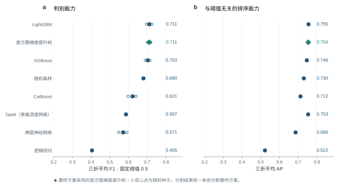
结果（表 18、图 20）：
- 梯度提升树类明显优于其他判别器。四种梯度提升树的 F1 依次为 LightGBM 0.711、直方图梯度提升树 0.711、XGBoost 0.703、CatBoost 0.621。其中 CatBoost 偏低：它的对称树每层只能用同一个分裂条件，表达“类别转移且邻域也在变”这类局部组合的能力较弱。
- 随机森林、两层神经网络和逻辑回归依次落后。随机森林、两层神经网络和逻辑回归分别为 0.680、0.571、0.405。逻辑回归只能表达特征的线性组合，无法表达“类别转移且邻域也在变”这类条件组合；两层神经网络对量纲差异大的表格特征敏感，在每折只有一两百个影像对的训练数据上不如树模型稳定 [44]。
- LightGBM 与直方图梯度提升树不相上下。LightGBM 为 0.711，直方图梯度提升树为 0.711，相差 +0.000；两者原理相同，差别主要来自提前停止所用的验证样本和每棵树的抽样比例。两者相差不到 0.005，按“打平取简单”的规则，判别器取直方图梯度提升树：它是 scikit-learn 自带的实现，不需要另装软件库，判别器加入辅助数据等后续实验也都基于它。
表格深度网络与表格基础模型。近两年针对表格数据提出的深度网络（TabM、RealMLP）和表格基础模型（TabICL、TabPFN-3.5，在大量合成表格任务上预训练，对新数据集不需要调参）不太可能超过梯度提升树，只各训练 1 次作为参照。TabM 为 0.587（AP 0.753），没有超过直方图梯度提升树。RealMLP、TabICL、TabPFN-3.5 在数百万个候选像元上每次要训练数小时，又明显不会超过梯度提升树，暂未完成。
判别器加入辅助数据。上面的判别器都只用 85 项影像特征。分割第二步表明多年地表统计能提高分割精度，第 8.1 节又指出长期预测时召回率下降，可能是缺少“这里过去是什么样”的背景。为此在同一个直方图梯度提升树里加入辅助数据作为特征，其余完全不变：只加多年地表统计（7 项：水体出现频率、NDVI 的 10%/50%/90% 分位数、BSI 中位数、耕作周期年份比例、无云观测次数），F1 0.716（精确率 0.815、召回率 0.639，第三折 0.549），与不加相比 +0.010（95% 区间 −0.014 至 +0.039）；四组全加（往年同期 7 项、多年地表统计 7 项、地形 5 项、离铁路距离 1 项，共 20 项），F1 0.729（精确率 0.806、召回率 0.666，第三折 0.565），与不加相比 +0.023（95% 区间 −0.036 至 +0.060）。不加辅助数据时 F1 为 0.706，第三折为 0.538。在四组之外再加雷达特征（前后包夹、同一轨道的两期 Sentinel-1，7 项：VV 差及其 5 × 5 均值、后侧景 VV，VH 的同样 3 项，有效标记），F1 0.731（第三折 0.569），与只加四组相比 +0.002（95% 区间 −0.019 至 +0.020），差别不显著。两者相差不到 0.005，按“打平取简单”的规则，最终方案的判别器不加雷达。
四组辅助数据各自有没有用。四组（往年同期 7 项、多年地表统计 7 项、地形 5 项、离铁路距离 1 项，每一项见表 5）一起加入后 F1 提高，但不知道是哪几组在起作用。按与第 4 章相同的做法逐组检验（表 19）：逐项加入——只用影像特征再单独加一组；逐项去掉——四组全加后去掉一组；置换检验——不重新训练，在测试时把某一组特征在候选像元之间随机打乱，看已训练好的判别器是否依赖它。分割、候选规则和判别器设置都与最终方案相同。判定规则事先定好：去掉某组后 F1 下降不到 0.005 的，记为可以去掉；可以去掉的组一起去掉再确认一次，仍与四组全加打平，就按“打平取简单”采用去掉后的精简版。
表 19 判别器辅助数据的筛选（分割最终方案、直方图梯度提升树判别器，A 口径，固定概率 0.5；三折平均，3 个判别器种子平均）
| 设置 | F1 | AP | 与对照相比 F1 差（95% 区间） |
|---|---|---|---|
| 逐项加入（对照：只用 85 项影像特征） | |||
| 只用影像特征 | 0.706 | 0.753 | — |
| ＋往年同期（7 项） | 0.708 | 0.752 | +0.002（−0.027 至 +0.023） |
| ＋多年地表统计（7 项） | 0.716 | 0.752 | +0.010（−0.014 至 +0.039） |
| ＋地形（5 项） | 0.725 | 0.757 | +0.019（−0.050 至 +0.055） |
| ＋离铁路距离（1 项） | 0.704 | 0.750 | −0.002（−0.025 至 +0.021） |
| 四组全加（最终方案） | 0.729 | 0.755 | +0.023（−0.036 至 +0.060） |
| 逐项去掉（对照：四组全加） | |||
| －往年同期（7 项） | 0.731 | 0.760 | +0.002（−0.034 至 +0.017） |
| －多年地表统计（7 项） | 0.722 | 0.757 | −0.007（−0.033 至 +0.009） |
| －地形（5 项） | 0.716 | 0.749 | −0.013（−0.039 至 +0.036） |
| －离铁路距离（1 项） | 0.731 | 0.760 | +0.002（−0.016 至 +0.017） |
| 置换检验（四组全加的判别器，测试时打乱该组） | |||
| 打乱往年同期（7 项） | — | — | −0.003（3 个种子，−0.004 至 −0.002） |
| 打乱多年地表统计（7 项） | — | — | −0.017（3 个种子，−0.020 至 −0.015） |
| 打乱地形（5 项） | — | — | −0.061（3 个种子，−0.064 至 −0.059） |
| 打乱离铁路距离（1 项） | — | — | −0.001（3 个种子，−0.001 至 −0.001） |
注：逐项加入、逐项去掉都是重新训练判别器；置换检验不重新训练，在测试时把该组特征在全部候选像元之间随机打乱（每组重复 3 次取平均），看已训练的判别器是否依赖它。置换检验一栏的范围是 3 个判别器种子之间的最小值至最大值。四组的具体内容——往年同期（7 项）：前后两期 NDVI、MNDWI、BSI 相对往年同季的偏离（6 项）和后期可用的往年观测数（1 项）；多年地表统计（7 项）：水体出现频率、NDVI 的 10%/50%/90% 分位数、BSI 中位数、耕作周期年份比例、无云观测次数；地形（5 项）：相对高程、坡度、坡向正弦、坡向余弦、局部起伏；离铁路距离（1 项）：像元到铁路中线的距离。每一项的定义和处理方法见表 5。
单独加入一组时，与只用影像特征相比：往年同期 +0.002、多年地表统计 +0.010、地形 +0.019、离铁路距离 −0.002。从四组中去掉一组时，与四组全加相比：去掉往年同期 +0.002（−0.034 至 +0.017）、去掉多年地表统计 −0.007（−0.033 至 +0.009）、去掉地形 −0.013（−0.039 至 +0.036）、去掉离铁路距离 +0.002（−0.016 至 +0.017）。置换检验中，打乱后 F1 的变化为：往年同期 −0.003、多年地表统计 −0.017、地形 −0.061、离铁路距离 −0.001。按事先定的规则，多年地表统计、地形去掉后 F1 下降 0.005 以上，是有用的；往年同期、离铁路距离去掉后下降不到 0.005，可以去掉。把可以去掉的组一起去掉（只留多年地表统计、地形）后 F1 0.731，与四组全加相比 +0.002（−0.023 至 +0.015），两者打平；按“打平取简单”，最终方案的判别器只加多年地表统计和地形，共 12 项。
后续的判别器。以上判别器都只看单个像元的特征。能直接看图的判别器——多模态大模型复核梯度提升树拿不准的候选斑块——列入后续实验（9.3 节），并以只看候选斑块周围小图的深度分类器作对照，检验提高是否来自大模型自带的知识。
5.9 分割更准，检测不一定更好
把统一条件下训练的各个分割方案（第一步的分割模型和第二步得到的分割最终方案）逐个接上同一套候选规则和判别器（直方图梯度提升树，不加辅助数据），检测成绩并不随分割精度同步提高（表 20）。
表 20 分割精度与检测成绩（统一训练条件的分割模型，各取第 1 个分割种子；接同一套候选规则与梯度提升树判别器，3 个判别器种子平均）
| 分割模型 | 分割 mIoU | 检测 F1 | 检测 AP |
|---|---|---|---|
| D2LS（12 个波段 + 多年地表统计） | 0.803 | 0.706 | 0.753 |
| D2LS（12 个波段） | 0.779 | 0.715 | 0.775 |
| D2LS（RGB） | 0.759 | 0.699 | 0.742 |
| ResNet-34 U-Net（12 个波段） | 0.763 | 0.671 | 0.731 |
| Swin V2 UPerNet（12 个波段） | 0.715 | 0.684 | 0.737 |
| SAM 3.1 + LoRA（RGB） | 0.597 | 0.719 | 0.751 |
| SegFormer-B2（12 个波段） | 0.708 | 0.709 | 0.750 |
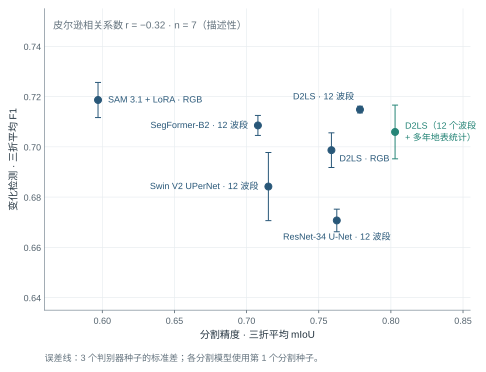
分割精度与检测成绩关系不大。七个分割方案的 mIoU 从 0.597 到 0.803，相差 0.206；接同一个判别器后，检测 F1 从 0.671 到 0.719，相差 0.048，两者的相关系数为 −0.32（图 21）。分割最好的是 D2LS（12 个波段 + 多年地表统计）（mIoU 0.803，检测 F1 0.706），检测最好的却是 SAM 3.1 + LoRA（RGB）（mIoU 0.597，检测 F1 0.719）。分割更准，并没有带来检测更好。原因在于判别器的分工：判断真伪的主要证据是光谱变化和邻域信息（大部分真实变化前后类别相同，本来就要靠光谱），分割提供的是“前后各是什么地物”的背景；分割在整幅影像上更准，并不意味着在变化附近的少数像元上更准。
多年地表统计让两期分割趋同。在测试期真实发生类别转移的像元上，只读影像的分割有 78% 把前后两期分成了不同类别（候选规则能抓到它们的前提），加入多年地表统计后降到 61%；两期都分对的比例从 64% 降到 50%。在没有变化的像元上则相反：两期被分成不同类别的比例从 5.4% 降到 3.8%，后期分对的比例从 89.0% 升到 90.0%。原因是多年地表统计对前后两期是同一份，它告诉网络“这里多年来通常是什么”，两期的分割都被拉向同一个答案：没变的地方更稳，真正变了的地方也被一起抹平。分割精度由大量没变的像元决定，所以 mIoU 升高；检测靠的恰恰是少数变了的像元，所以检测没有同步提高。由此得到一个明确的改进方向：训练时让网络有时看不到多年地表统计，逼它在变化处更多地依据当期影像。按这个方向做了两个实验：一是“随机置零”，训练时以概率 0.5 把多年地表统计整组置零，预测时照常输入；二是在随机置零的基础上再加一致性约束，要求置零后的分割结果与不置零时一致。分割精度略有下降（mIoU 分别比不置零低 0.010 和 0.015），但真实发生类别转移的像元上，两期被分成不同类别的比例从 61% 回升到 70% 和 72%，没有变化的像元上这一比例只从 3.8% 升到 4.3% 和 4.2%。接上候选规则和判别器后，按分割的三个随机种子逐个比较，每个分割种子接 3 个判别器种子（表 21）。判别器为最终方案的设置（多年地表统计 + 地形）时，三个分割种子平均 F1 从 0.727 提高到 0.733（+0.0052），三个种子上分别为 +0.005、+0.013、−0.002，各自的 95% 区间都包含 0。判别器加四组辅助数据时结论相同：0.724 提高到 0.730（+0.006）。再加一致性约束没有更好：已完成的 2 个分割种子上平均 0.720，同样种子上不置零为 0.723。随机置零的提高刚超过打平线 0.005，按 2.5 节的规则应采用随机置零的分割；但三个种子中有 1 个下降，提高并不稳定。本稿的最终方案仍按不置零的分割报告，是否更换在 9.3 节列为待定事项。
表 21 分割训练时随机把多年地表统计整组置零的检测成绩（A 口径，固定概率 0.5；三折平均，每格为 3 个判别器种子平均）
| 分割随机种子 | 判别器加多年地表统计 + 地形（最终方案设置）：不置零 | 同左：随机置零 | 判别器加四组辅助数据：不置零 | 同左：随机置零 | 同左：随机置零 + 一致性约束 |
|---|---|---|---|---|---|
| 第 1 个 | 0.731 | 0.736 | 0.729 | 0.735 | 0.732 |
| 第 2 个 | 0.722 | 0.735 | 0.717 | 0.727 | 0.709 |
| 第 3 个 | 0.729 | 0.727 | 0.727 | 0.729 | — |
| 平均 | 0.727 | 0.733 | 0.724 | 0.730 | 0.720（2 个） |
注：分割都是 D2LS 读 12 个波段 + 多年地表统计（7 层：水体出现频率、NDVI 的 10%/50%/90% 分位数、BSI 中位数、耕作周期年份比例、无云观测次数；观测次数另复制一个通道，共 8 个通道）；“随机置零”= 训练时每个样本以概率 0.5 把这 8 个通道整组置零（预测时照常输入）；“一致性约束”= 再要求置零后的分割结果与不置零时一致（KL 散度，权重 1）。判别器“多年地表统计 + 地形”共 12 项：多年地表统计 7 项同上，地形 5 项为相对高程、坡度、坡向正弦、坡向余弦、局部起伏；“四组辅助数据”再加往年同期 7 项和离铁路距离 1 项，共 20 项，往年同期 7 项为前后两期 NDVI、MNDWI、BSI 相对往年同季的偏离（6 项）和后期可用的往年观测数（1 项）。一致性约束在已完成的 2 个分割种子上都不如只做随机置零，没有再补第 3 个种子。
按 2.6 节的实验逻辑，分割方案按分割精度选定，判别器在选定的分割方案上比较，两步各自用自己的标准，互不替代。
5.10 先分割后检测的最终方案与详细结果
先分割后检测的最终方案为：D2LS（12 个波段 + 多年地表统计）分割 + 候选像元 + 梯度提升树判别（特征加多年地表统计和地形）（分割最终方案 + 第四步选出的判别器设置）。它的三折平均 F1 为 0.731（精确率 0.792、召回率 0.681），AP 为 0.759。以上是分割第 1 个随机种子的结果；分割换用另外两个随机种子（判别器不变）时 F1 为 0.722 和 0.729，三个分割种子平均 0.727，最高与最低相差 0.009，这是分割训练的随机性带来的波动。表 22 给出各测试期、各测点和不同成像条件下的结果，图 22 展示效果最好的几个影像对。
表 22 先分割后检测（D2LS（12 个波段 + 多年地表统计）分割 + 候选像元 + 梯度提升树判别（特征加多年地表统计和地形））的详细结果（A 口径，固定概率 0.5）
| 统计范围 | 精确率 | 召回率 | F1 | 说明 |
|---|---|---|---|---|
| 测试期 2023 年 4—7 月 | 0.942 | 0.738 | 0.827 | AP 0.874 |
| 测试期 2023 年 11 月—2024 年 3 月 | 0.813 | 0.772 | 0.792 | AP 0.845 |
| 测试期 2024 年 4 月以后 | 0.621 | 0.533 | 0.574 | AP 0.559 |
| 三折平均 | 0.792 | 0.681 | 0.731 | AP 0.759，变化类 IoU 0.588，3 次训练平均 |
| 三折像元合并 | 0.749 | 0.665 | 0.704 | |
| 事件（≥ 4 像元的变化区域） | — | 59.8% | — | 共 87 个事件；报出的斑块中 44.6% 不与任何标注变化重叠 |
| 测点：株洲南 | 0.793 | 0.306 | 0.441 | 552 个变化像元 |
| 测点：衡阳北 | 0.753 | 0.729 | 0.741 | 3,921 个变化像元 |
| 测点：韶关南 | 0.723 | 0.618 | 0.666 | 1,183 个变化像元 |
| 无雾影像对 | 0.789 | 0.650 | 0.713 | 4,199 个变化像元 |
| 有雾影像对 | 0.660 | 0.706 | 0.682 | 1,457 个变化像元 |
| 河岸带外 | 0.763 | 0.735 | 0.749 | 4,289 个变化像元 |
| 河岸带内 | 0.685 | 0.444 | 0.538 | 1,367 个变化像元 |
| 类型：新增裸露 | — | 0.729 | — | 4,303 个变化像元 |
| 类型：道路增加 | — | 0.601 | — | 340 个变化像元 |
| 类型：植被减少 | — | 0.413 | — | 458 个变化像元 |
| 类型：水域增加 | — | 0.453 | — | 391 个变化像元 |
| 类型：水域减少 | — | 0.374 | — | 591 个变化像元 |
| 误报所在的后期地物 | — | — | — | 水体 11%；植被 37%；耕地 2%；裸露 40%；建成 7%；无地物标注 3% |
注：河岸带指距水陆分界 3 个像元以内；一个变化区域可同时标有多个类型；“无地物标注”指后期影像没有地物标注的位置。
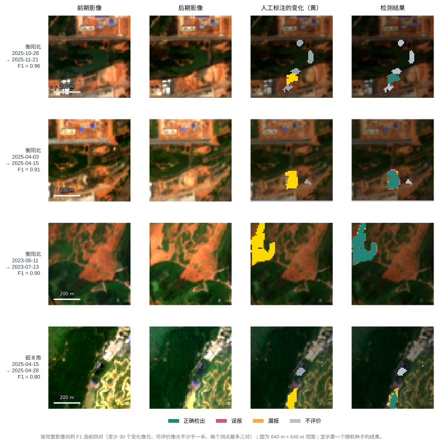
- 各测试期：三折的 F1 依次为 0.827、0.792、0.574；第三折（2024 年 4 月以后，跨度两年多）最低，主要是召回率下降。
- 测点：衡阳北 0.741；韶关南 0.666；株洲南 0.441。株洲南测试期变化像元最少、多为小片，F1 最低。
- 成像条件：有雾影像对的 F1 为 0.682，无雾的为 0.713；河岸带内为 0.538，是最困难的区域。
- 变化区域大小：按人工标注的变化区域大小统计召回率，超过 100 个像元的为 0.808，5—20 个像元的为 0.151，1—4 个像元的只有 0.121。
6 两条路线的比较与方法选择
本研究先完成直接检测的基础模型、辅助输入和接入方式探索，再完成先分割后检测的分割模型、分割输入、融合方式和判别器探索。两条路线采用 A 口径标签、相同的时间划分和固定阈值 0.5。最终方法是第 5 章最优的先分割后检测方案，直接检测用于比较，两条路线的概率融合保留为互补性分析。
表 23 两条路线最终方案及其融合的比较（A 口径，固定概率 0.5）
| 指标 | 直接检测：OlmoEarth + 光谱指数差（逐级相加） | 先分割后检测（最终方案）：D2LS（12 个波段 + 多年地表统计）分割 + 候选像元 + 梯度提升树判别（特征加多年地表统计和地形） | 两者等权融合（补充对照） | 按验证集选权重融合（直接检测 0.30、先分割后检测 0.70）（补充对照） |
|---|---|---|---|---|
| 三折平均 F1 | 0.703 | 0.731 | 0.733 | 0.742 |
| 精确率 | 0.789 | 0.792 | 0.863 | 0.845 |
| 召回率 | 0.639 | 0.681 | 0.637 | 0.663 |
| AP | 0.739 | 0.759 | 0.805 | 0.804 |
| 变化类 IoU | 0.549 | 0.588 | 0.583 | 0.598 |
| 三折像元合并 F1 | 0.667 | 0.704 | 0.709 | 0.719 |
| 训练次数 | 3 | 3 | 各 3 次，按次序配对 | 各 3 次，按次序配对 |
| F1：2023 年 4—7 月 | 0.812 | 0.827 | 0.816 | 0.830 |
| F1：2023 年 11 月—2024 年 3 月 | 0.692 | 0.792 | 0.729 | 0.779 |
| F1：2024 年 4 月以后 | 0.604 | 0.574 | 0.654 | 0.618 |
| F1：有雾影像对 | 0.586 | 0.682 | 0.660 | 0.700 |
| F1：无雾影像对 | 0.704 | 0.713 | 0.729 | 0.726 |
| F1：河岸带内 | 0.461 | 0.538 | 0.478 | 0.521 |
| F1：河岸带外 | 0.726 | 0.749 | 0.772 | 0.770 |
| 事件检出率 | 62.8% | 59.8% | 61.7% | 60.2% |
| 报出斑块中与标注不重叠的比例 | 44.0% | 44.6% | 29.5% | 34.9% |
注：融合把两条路线输出的变化概率逐像元加权平均，再按 0.5 判定；等权融合两者各占 0.5，按验证集选权重的融合在三折验证集合并后选验证 F1 最高的权重（见本章“两条路线融合”）。两条路线的第 1、2、3 次训练依次配对。按变化类型的召回率和报警斑块数只对两条路线单独统计，融合一栏记“—”。
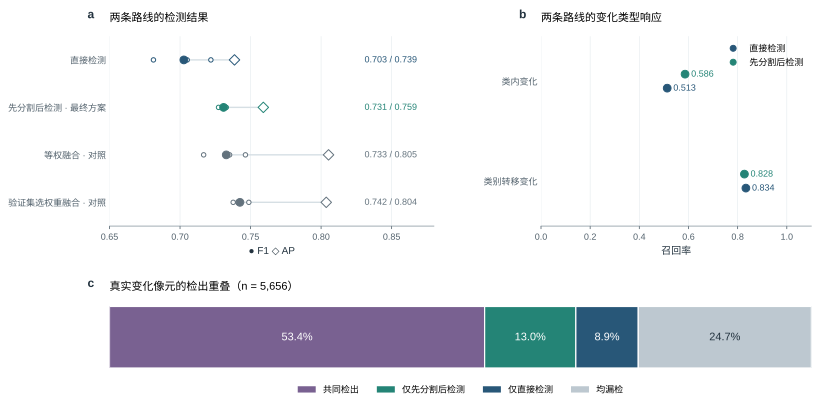
总体成绩。先分割后检测的三折平均 F1 为 0.731，AP 为 0.759；直接检测为 0.703，AP 为 0.739。先分割后检测减直接检测，三折平均 F1 之差为 +0.028（95% 区间 −0.063 至 +0.126），把全部测试影像对合在一起计算为 +0.037（−0.064 至 +0.112），区间包含 0，两条路线的总体成绩分不出高低。三个测试期分别比较，先分割后检测依次高 0.015、高 0.100、低 0.030。
按变化类型：两条路线各有所长。把真实变化分成两类：两期地物类别不同的“类别转移变化”（1,840 个像元）和类别相同的“类内变化”（3,816 个像元）。类别转移变化的召回率，先分割后检测为 0.828，直接检测为 0.834；类内变化的召回率依次为 0.586 和 0.513。两条路线都是类别转移变化检出得多、类内变化检出得少；先分割后检测在类内变化上也不落后：它的候选规则中“光谱突变”一条专门保住了这类变化（图 23b）。从检出结果的重叠看（图 23c），真实变化中 53% 两条路线都能检出，13% 只被先分割后检测检出，9% 只被直接检测检出，25% 两条路线都没有检出。两条路线各自独有的检出合计 22%，说明二者有互补的余地（8.2 节）。
换算成核查工作量。测试期三个测点共 300 个影像对，约 36 个月。先分割后检测报出 104 处变化（不少于 4 个像元的斑块），其中 47 处与人工标注的变化不重叠；直接检测相应为 119 处和 52 处。平均到每个测点，约每月一处报警，核查人员可以逐一查看。
补充对照：两条路线融合。两条路线的错误不完全重合，把两者输出的变化概率逐像元取平均（等权融合，不需要再训练任何模型），再按 0.5 判定。融合后三折平均 F1 为 0.733，AP 为 0.805，精确率从 0.789 和 0.792 提高到 0.863，召回率 0.637 与两条路线相当；三个测试期依次为 0.816、0.729、0.654，2023 年 4—7 月介于两者之间（直接检测 0.812，先分割后检测 0.827）；2023 年 11 月—2024 年 3 月介于两者之间（直接检测 0.692，先分割后检测 0.792）；2024 年 4 月以后高于两条路线。与直接检测相比 F1 相差 +0.030（95% 区间 −0.008 至 +0.070，区间包含 0；合并计算 +0.042，+0.010 至 +0.075），与先分割后检测相比相差 +0.002（−0.076 至 +0.084，区间包含 0；合并计算 +0.005，−0.060 至 +0.098）。提高主要来自误报减少：报出的斑块中与标注变化不重叠的比例，直接检测为 44%，先分割后检测为 45%，融合后降到 29%。与先分割后检测的差距区间较宽，是因为先分割后检测在不同影像对上的成绩起伏较大。融合的另一种做法是按验证集选权重：融合概率取 w × 直接检测概率 + (1 − w) × 先分割后检测概率，w 从 0 到 1、步长 0.05。每折验证集中含变化的影像对只有 8、1、4 个，三折各自选出的 w 分别为 1.00、0.35、0.20，相差很大；因此把三折验证集合并后选验证 F1（固定 0.5）最高的 w，与最高值相差不到 0.005 时取最接近等权的，选出直接检测 0.30、先分割后检测 0.70（验证 F1 0.812，等权为 0.783）。测试集上三折平均 F1 为 0.742（精确率 0.845、召回率 0.663，AP 0.804），与等权融合相比 +0.010（95% 区间 −0.041 至 +0.063）；三个测试期依次为 0.830、0.779、0.618，与等权相比 2023 年 11 月—2024 年 3 月变化最大（+0.050），2024 年 4 月以后反而降低 0.036。两种融合均作为路线互补性的补充检验，主方案采用先分割后检测。
同一处只报一次。标注规则规定同一处变化只在它第一次出现的影像对里标为变化（4.4.1 节），模型在之后的影像对里再报同一处就算误报。为检验这类“重复报警”是不是误报的主要来源，对每个测试影像对找出同一测点的前一个影像对，统计误报落在前一对已经报过的位置（再向外扩 0—2 个像元）上的比例：等权融合只有 1.7%—3.3%，直接检测和先分割后检测也都在 9% 以内。如果部署时把这些位置去掉，真检出也会被去掉相近的比例，三折平均 F1 反而下降（等权融合从 0.733 降到 0.717—0.729）。重复报警不是误报的主要来源，这一后处理不采用。
最终方法。本研究选择最优的先分割后检测方案：D2LS（12 个波段 + 多年地表统计）分割 + 候选像元 + 梯度提升树判别（特征加多年地表统计和地形）。三折平均 F1 为 0.731，精确率 0.792，召回率 0.681，AP 0.759。这一路线把逐期地物识别、候选筛选和变化判别分开，可以结合地物概率、光谱证据与历史背景定位误报和漏报；分割模型可重复使用，判别器可用新增标注更新。直接检测保留为研究对照；两条路线融合的成绩用于分析互补性。后续改进围绕当前分割方案、候选规则和判别器展开。
7 河岸线研究
河岸变化是铁路沿线的另一类风险。本研究用 10 米影像的长时间序列，研究了两个临河测点的水域范围和水边线变化。
方法。对株洲南和韶关南，用全部无云影像逐期提取水体（按水体指数 MNDWI 设门槛），统计每个像元多年来被水覆盖的频率；分别提取多年夏季（6—9 月）和冬季（12—2 月）的中位水边线；在铁路一侧每隔约 100 米布设一条垂直于河岸的断面（株洲南 31 条、韶关南 26 条），量测水边线到铁路的距离，以及它的季节差和年际差。
结果。季节差和年际差的中位数绝对值都小于 2 米，而同一断面单景影像提取的水边线本身的摆动，中位数就达到 5.7 米（株洲南）和 6.4 米（韶关南）。也就是说，多年的变化比单景观测本身的波动还小（图 24、图 25）。韶关南部分断面出现超过 5 米的季节或年际变化，位置与冬季陡坡阴影重合。韶关南 26 条临河断面中，有 18 条的水边线离铁路不到 50 米。
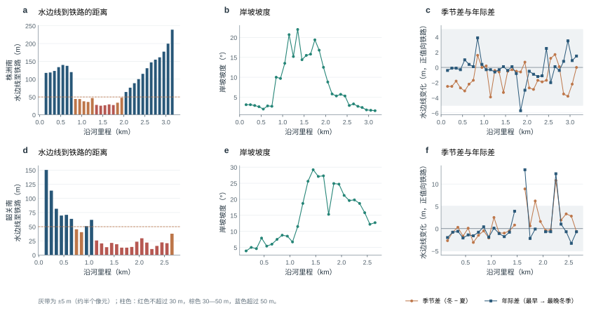
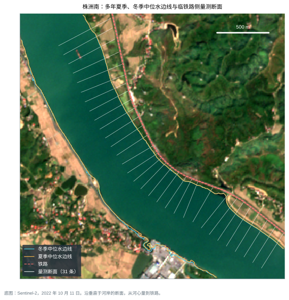
变化检测在河岸带的表现。两条路线在河岸带（距水陆分界 3 个像元以内）的精度都明显低于其他区域（表 12 和表 22 中的“河岸带内”一行）。河岸带内的变化信号混合了水位涨落、水边混合像元、水色变化和阴影，10 米影像很难把它们分开。
结论与安排。10 米影像适合做河岸的历史筛查：哪些河段离铁路近、是不是陡岸、多年水域范围有没有明显推进。米级的岸线位移，需要与 Sentinel-2 同一天或相差 48 小时以内的亚米级影像，并结合同期水位资料。下一步针对株洲南 2024 年 10 月 3 日、2023 年 1 月 7 日和韶关南 2024 年 11 月 29 日、2022 年 10 月 26 日四个有代表性的水面状态，查找时间相近的高分辨率影像和水位记录，给出每条断面的定位误差和变化量。
8 当前存在的问题与改进方向
根据第 4—6 章的结果，当前方法的问题集中在以下五个方面。每个问题都给出表现、原因和改进实验。
8.1 长期预测时召回率下降
表现。两条路线在第三折（2024 年 4 月以后）的 F1 都低于前两折：先分割后检测第三折 F1 为 0.574，直接检测为 0.604，主要是召回率下降。
可能原因。第三折的测试期长达两年多，地表状况、施工类型和成像条件与训练期差别较大。另外，判别器和直接检测网络都只看前后两期影像，缺少“这里过去是什么样”的长期背景。
改进实验。已做的改进与发现：（1）判别器加入辅助数据（经逐组筛选后保留多年地表统计 7 项和地形 5 项）后，先分割后检测第三折 F1 从 0.538 提高到 0.574（5.8 节）；（2）直接检测接入多年地表统计没有提高（4.7 节）；（3）两条路线等权融合后第三折为 0.654，高于两条路线各自的成绩，按验证集选权重的融合为 0.618（第 6 章）；此外，诊断发现多年地表统计会让两期分割趋同、抹掉部分真实变化（5.9 节），训练时随机把多年地表统计整组置零后，三个分割种子平均第三折 F1 为 0.588，不置零为 0.574，是否据此更换分割方案待定（9.3 节）。下一步仍以第三折 F1 提高、前两折不下降为判断标准。
8.2 类内变化检出不足
表现。类内变化（两期地物类别相同的真实变化）的召回率，先分割后检测为 0.586，直接检测为 0.513，明显低于类别转移变化（0.828、0.834）。
原因。林地疏伐后仍是林地、工地再次开挖后仍是裸露，这类变化的光谱差异小，容易落在候选之外，或被判别器否定；分割网络在这里提供不了类别证据。
改进实验。（1）两条路线在类内变化上各有检出、互有补充，第 6 章的两种融合检验了这一点；（2）在判别器中加入植被覆盖度、两期地物概率的变化量等连续证据，代替“类别是否改变”这一离散证据。判断标准为类内变化召回率提高、总体精确率不下降。
8.3 小目标漏检
表现。先分割后检测对 1—4 个像元的变化区域召回率只有 0.121，5—20 个像元的为 0.151，而超过 100 个像元的为 0.808。
原因。在 10 米像元下，施工便道和小片清表只有 1—3 个像元宽，像元内往往混有两种地物，光谱介于两者之间；3 × 3 平滑和候选规则也会削弱孤立的小区域。
改进实验。（1）用高分辨率影像核实小片变化的标注本身是否准确（9.1 节）；（2）训练时提高小片变化样本的权重，并对小区域取消平滑。判断标准为 1—20 个像元变化区域的召回率提高，误报斑块占比不上升。
8.4 有雾和河岸等困难条件
表现。河岸带内的 F1，先分割后检测为 0.538，直接检测为 0.461，都明显低于河岸带外（0.749、0.726）。有雾影像对的 F1，先分割后检测为 0.682（无雾 0.713），直接检测为 0.586（无雾 0.704）；先分割后检测有雾时低 0.031，直接检测有雾时低 0.119。
原因。薄雾不会被云掩膜识别出来，但会抬高可见光反射率；河岸带的水位涨落、水边混合像元和水色变化，在 10 米分辨率下难以与真实变化区分。
改进实验。（1）训练时给单期影像人为加上薄雾（合成雾增强），让网络学会“雾造成的差别不是地表变化”；（2）已检验雷达：把雷达作为 OlmoEarth 的原生输入，有雾影像对上的 F1 反而低 0.041（95% 区间 −0.080 至 +0.005，4.7 节），雷达解决不了有雾的问题；（3）河岸带单独评价，河岸位移改用高分辨率影像量测（第 7 章）。
8.5 评价数据规模有限
本轮三折用于时间外推的开发比较，方案选择持续参考了这些结果。最终方案确定后，后续新增时段和新测点的数据将用于冻结配置的独立评价。
表现。三折测试期共有 5,656 个变化像元，但前两折分别只有 6 个和 4 个测试影像对含有变化，一个影像对就能左右该折的 F1，因此三折平均 F1 的检验区间很宽，同一路线内 F1 相差 0.05 以下通常分不出高低；验证集更小，在验证集上选门槛会带来很大的波动（2.5 节）。另外，目前只检验了按时间外推，还没有检验换到新测点的效果。
改进。（1）标注 2026 年 7 月以后的新影像，作为只在最后使用一次的独立测试集；（2）用高分辨率影像对一批影像对做独立判读，作为不依赖现有标注的精度评价（9.1 节）；（3）在新的测点上检验，判别器去掉测点编码；（4）利用公开数据：Dynamic World 的 Sentinel-2 专家地物标注 [53] 可用于扩充分割模型的训练，DynamicEarthNet 的逐月地物与变化标注 [54] 和 OSCD [20] 可用于检验方法在其他地区的表现。
9 后续安排
9.1 高分辨率影像核验
有三类问题需要亚米级影像回答：标注是否准确（窄条、小片、边缘的变化在 10 米上看不清）；误报是不是真的误报（部分“误报”其实是标注遗漏）；10 米检测的极限在哪里（新建建筑、林地小片）。每个待核实的变化都需要前后两期高分辨率影像：只有一期，只能说明现在是什么地物，说明不了是什么时候变的。
表 24 高分辨率影像采购方案（吉林一号存档影像，金额只在内部版提供）
| 批次 | 内容 | 期数 | 金额 | 用途 |
|---|---|---|---|---|
| 核心诊断首批 | 8 个代表性变化（成片检出、大量漏报、重点施工、河岸、有雾误报等），每个变化前后各需一期 | 16 个需求中 14 个有存档，对应 13 景；另有 2 个后期需求需要另查 | （只在内部版） | 核实标注、误报和漏报的性质 |
| 独立评价批 | 按测点、季节、成像质量和检测结果分层抽取 12—24 个影像对，用高分辨率影像独立判读 | 最多 48 景 | （只在内部版） | 不依赖现有标注的独立精度评价 |
| 历史覆盖批 | 三个测点 2021—2026 年各季节的存档 | 93 景（0.5 米 56 景、亚米级 37 景），覆盖 60 个“测点 × 季度”中的 53 个 | （只在内部版） | 各季节背景与案例回看 |
| 河岸同期批 | 四个代表性水面状态，要求与 Sentinel-2 同一天或相差 48 小时以内 | 4—8 景，需另行查询 | （只在内部版） | 米级岸线量测 |
到货验收时逐景核对：拍摄日期与时刻、原始分辨率、目标区内的云和阴影、几何精度和配准误差、侧视角度、是否真正覆盖了目标变化发生的时段、使用许可。建议先采购核心诊断首批。
9.2 台账事件研究
台账是铁路部门记录沿线隐患和施工事件的清单，记有事件的时间、地点和类型。我们对台账事件逐一看图，判断事件在 10 米影像上能否看到可归属于事件的痕迹；能看到的只是少数，水淹事件因为事件后很少有晴天影像，几乎都看不清。台账的条数和逐条判读结果属于铁路方资料，只在内部版提供。
因此台账研究分两个方向：
- 事件前后的变化检测：在可见事件窗口上运行本研究的方法，计算事件检出率；在同一线路、地形和观测条件相近的无事件窗口上计算误报率，作为方法的外部检验。
- 长期前兆线索：对事件点和匹配的对照点，比较事件发生之前多年的地表背景（坡度、汇水条件、植被变化趋势、裸土比例、历史水体频率）以及事件前 1—30 天的降雨，检验事件前的地表扰动能否在地点、季节和降雨之外提供额外的预警信息。所有变量的时间范围都严格截止于事件发生之前。
9.3 实验安排
剩余实验按 2.6 节的实验逻辑排列，先完成可能改变结论的实验，再补足严谨性（表 25）。
表 25 下一阶段的实验安排（优先级 1 为可能改变结论的实验）
| 优先级 | 实验 | 机器 | 预计完成 |
|---|---|---|---|
| 1 | 决定是否把分割换成“训练时随机把多年地表统计整组置零”的版本：三个分割种子平均 F1 0.733，不置零 0.727，差 +0.0052，刚过打平线，三个种子中有 1 个下降（5.9 节）。若更换，最终方案的详细评价、案例图和第 6 章比较全部按新分割重算 | 本机 3090 | 确定后 1 天 |
| 2 | 多模态大模型（Qwen3.8-27B）复核梯度提升树拿不准的候选斑块：先零样本、少样本，有信号再做 LoRA；以只看候选斑块小图的深度分类器作对照。上限分析：即使全部判对，三折平均 F1 最多提高 0.02—0.05 | RTX PRO 6000（待到位） | 到位后 |
| 3 | 合成雾增强、小片变化加权、河岸带单独评价 | 本机 3090 | 10-30 以后 |
| 3 | 高分辨率影像独立判读、2026 年 7 月以后影像的独立测试集 | 人工 | 采购到货后 |
10 结论
- 评价口径：人工标注的变化都算变化（A 口径），概率 0.5 为统一门槛。只算类别转移会排除测试期 73% 的变化，且偏向先分割后检测；在验证集上选门槛会因验证集太小而产生上百倍的门槛波动。
- 直接检测：OlmoEarth 是最好的基础模型（F1 0.659）；辅助数据中只有光谱指数差有用，而且要注入解码器各级（逐级相加或 FiLM，两者不相上下）：按统一阈值 0.5 下 F1 最高，最终方案为“OlmoEarth + 光谱指数差（逐级相加）”，F1 0.703，比什么都不加高 +0.043，95% 区间 +0.004 至 +0.105。往年同期、地形、雷达、光照和拍摄日期，单独接入都没有带来可以确认的提高；训练时随机丢弃和置换检验表明，它们与指数差的信息重复，不是模型没学会用。
- 分割：统一训练条件下 D2LS 读 12 个波段最好（mIoU 0.779）；加入多年地表统计后分割精度再提高 0.025，作为分割最终方案。但多年地表统计让前后两期的分割趋同，真实变化处更容易被分成同一类，检测成绩没有同步提高（5.9 节）。训练时随机把多年地表统计整组置零可以缓解这一问题：三个分割种子平均检测 F1 +0.0052，刚过打平线，且三个种子中有 1 个下降，是否更换分割方案待定。
- 先分割后检测：直接比较两期类别的精确率只有 0.4%；判别器删掉了 99.9% 以上的假转移，并找回约六成类别不变的变化。分割精度提高对检测的影响小，检测的关键在判别器；梯度提升树类判别器明显优于随机森林、神经网络和逻辑回归。判别器加入辅助数据并逐组筛选：地形（相对高程、坡度、坡向正弦与余弦、局部起伏 5 项）和多年地表统计（水体出现频率、植被指数 10%/50%/90% 分位数、裸土指数中位数、耕作年份比例、观测期数 7 项）有用，往年同期和离铁路距离没有作用；只加这两组后 F1 从 0.706 提高到 0.731。
- 最终方案：采用最优的先分割后检测方案，F1 0.731、精确率 0.792、召回率 0.681、AP 0.759。研究先探索直接检测（最终 F1 0.703），再引入逐期地物分割、候选筛选与判别器，形成可分步诊断和更新的方法；两条路线的融合作为补充对照保留。
- 主要问题：长期预测时召回率下降、类内变化和小目标检出不足、河岸带困难、独立测试数据不足。下一阶段按 9.3 节逐项推进，并用高分辨率影像独立核验。
参考文献
[1] YANG K, XIA G S, LIU Z, et al. Asymmetric siamese networks for semantic change detection in aerial images[J]. IEEE Transactions on Geoscience and Remote Sensing, 2022, 60: 5609818.
[2] FOODY G M. Monitoring the magnitude of land-cover change around the southern limits of the Sahara[J]. Photogrammetric Engineering & Remote Sensing, 2001, 67(7): 841-847.
[3] BROWN J F, TOLLERUD H J, BARBER C P, et al. Lessons learned implementing an operational continuous United States national land change monitoring capability: the Land Change Monitoring, Assessment, and Projection (LCMAP) approach[J]. Remote Sensing of Environment, 2020, 238: 111356.
[4] BULLOCK E L, WOODCOCK C E, SOUZA C, et al. Satellite-based estimates reveal widespread forest degradation in the Amazon[J]. Global Change Biology, 2020, 26(5): 2956-2969.
[5] MALILA W A. Change vector analysis: an approach for detecting forest changes with Landsat[C]//Proceedings of the Symposium on Machine Processing of Remotely Sensed Data. West Lafayette: Purdue University, 1980: 326-335.
[6] SINGH A. Digital change detection techniques using remotely-sensed data[J]. International Journal of Remote Sensing, 1989, 10(6): 989-1003.
[7] NIELSEN A A. The regularized iteratively reweighted MAD method for change detection in multi- and hyperspectral data[J]. IEEE Transactions on Image Processing, 2007, 16(2): 463-478.
[8] DAUDT R C, LE SAUX B, BOULCH A. Fully convolutional siamese networks for change detection[C]//2018 25th IEEE International Conference on Image Processing (ICIP). 2018: 4063-4067.
[9] FANG S, LI K, SHAO J, et al. SNUNet-CD: a densely connected siamese network for change detection of VHR images[J]. IEEE Geoscience and Remote Sensing Letters, 2022, 19: 8007805.
[10] CHEN H, QI Z, SHI Z. Remote sensing image change detection with transformers[J]. IEEE Transactions on Geoscience and Remote Sensing, 2022, 60: 5607514.
[11] BANDARA W G C, PATEL V M. A transformer-based siamese network for change detection[C]//IGARSS 2022 IEEE International Geoscience and Remote Sensing Symposium. 2022: 207-210.
[12] FANG S, LI K, LI Z. Changer: feature interaction is what you need for change detection[J]. IEEE Transactions on Geoscience and Remote Sensing, 2023, 61: 5610111.
[13] CHEN H, SONG J, HAN C, et al. ChangeMamba: remote sensing change detection with spatiotemporal state space model[J]. IEEE Transactions on Geoscience and Remote Sensing, 2024, 62: 4409720.
[14] SZWARCMAN D, ROY S, FRACCARO P, et al. Prithvi-EO-2.0: a versatile multi-temporal foundation model for Earth observation applications[EB/OL]. arXiv:2412.02732, 2024.
[15] JAKUBIK J, YANG F, BLUMENSTIEL B, et al. TerraMind: large-scale generative multimodality for Earth observation[C]//Proceedings of the IEEE/CVF International Conference on Computer Vision (ICCV). 2025.
[16] Allen Institute for AI. OlmoEarth: open foundation models for Earth observation[EB/OL]. 2025. https://allenai.org/olmoearth.
[17] SIMÉONI O, VO H V, SEITZER M, et al. DINOv3[EB/OL]. arXiv:2508.10104, 2025.
[18] RAVI N, GABEUR V, HU Y T, et al. SAM 2: segment anything in images and videos[C]//International Conference on Learning Representations (ICLR). 2025.
[19] DONG S, HU Y, WANG L, et al. PeftCD: leveraging vision foundation models with parameter-efficient fine-tuning for remote sensing change detection[EB/OL]. arXiv:2509.09572, 2025. https://arxiv.org/abs/2509.09572.
[20] DAUDT R C, LE SAUX B, BOULCH A, et al. Urban change detection for multispectral earth observation using convolutional neural networks[C]//IGARSS 2018 IEEE International Geoscience and Remote Sensing Symposium. 2018: 2115-2118.
[21] CORLEY I, ROBINSON C, ORTIZ A. A change detection reality check[EB/OL]. ICLR 2024 Workshop on Machine Learning for Remote Sensing. arXiv:2402.06994, 2024.
[22] HU E J, SHEN Y, WALLIS P, et al. LoRA: low-rank adaptation of large language models[C]//International Conference on Learning Representations (ICLR). 2022.
[23] ZHU D, et al. ChangeViT: unleashing plain vision transformers for change detection[J]. Pattern Recognition, 2026. DOI: 10.1016/j.patcog.2025.112539.
[24] PEREZ E, STRUB F, DE VRIES H, et al. FiLM: visual reasoning with a general conditioning layer[C]//Proceedings of the AAAI Conference on Artificial Intelligence. 2018, 32(1): 3942-3951.
[25] AREVALO J, SOLORIO T, MONTES-Y-GÓMEZ M, et al. Gated multimodal units for information fusion[EB/OL]. ICLR 2017 Workshop. arXiv:1702.01992, 2017.
[26] ZHANG J, LIU H, YANG K, et al. CMX: cross-modal fusion for RGB-X semantic segmentation with transformers[J]. IEEE Transactions on Intelligent Transportation Systems, 2023, 24(12): 14679-14694.
[27] MILLETARI F, NAVAB N, AHMADI S A. V-Net: fully convolutional neural networks for volumetric medical image segmentation[C]//2016 Fourth International Conference on 3D Vision (3DV). 2016: 565-571.
[28] TOWNSHEND J R G, JUSTICE C O, GURNEY C, et al. The impact of misregistration on change detection[J]. IEEE Transactions on Geoscience and Remote Sensing, 1992, 30(5): 1054-1060.
[29] DAI X, KHORRAM S. The effects of image misregistration on the accuracy of remotely sensed change detection[J]. IEEE Transactions on Geoscience and Remote Sensing, 1998, 36(5): 1566-1577.
[30] TUCKER C J. Red and photographic infrared linear combinations for monitoring vegetation[J]. Remote Sensing of Environment, 1979, 8(2): 127-150.
[31] MCFEETERS S K. The use of the normalized difference water index (NDWI) in the delineation of open water features[J]. International Journal of Remote Sensing, 1996, 17(7): 1425-1432.
[32] XU H. Modification of normalised difference water index (NDWI) to enhance open water features in remotely sensed imagery[J]. International Journal of Remote Sensing, 2006, 27(14): 3025-3033.
[33] RIKIMARU A, ROY P S, MIYATAKE S. Tropical forest cover density mapping[J]. Tropical Ecology, 2002, 43(1): 39-47.
[34] European Space Agency. Copernicus DEM: global and European digital elevation model (COP-DEM GLO-30)[EB/OL]. 2021. https://doi.org/10.5270/ESA-c5d3d65.
[35] PONTIUS R G, MILLONES M. Death to Kappa: birth of quantity disagreement and allocation disagreement for accuracy assessment[J]. International Journal of Remote Sensing, 2011, 32(15): 4407-4429.
[36] FOODY G M. Explaining the unsuitability of the kappa coefficient in the assessment and comparison of the accuracy of thematic maps obtained by image classification[J]. Remote Sensing of Environment, 2020, 239: 111630.
[37] JENSEN J R. Introductory digital image processing: a remote sensing perspective[M]. 4th ed. Glenview: Pearson, 2015.
[38] COPPIN P, JONCKHEERE I, NACKAERTS K, et al. Digital change detection methods in ecosystem monitoring: a review[J]. International Journal of Remote Sensing, 2004, 25(9): 1565-1596.
[39] DAUDT R C, LE SAUX B, BOULCH A, et al. Multitask learning for large-scale semantic change detection[J]. Computer Vision and Image Understanding, 2019, 187: 102783.
[40] DING L, GUO H, LIU S, et al. Bi-temporal semantic reasoning for the semantic change detection in HR remote sensing images[J]. IEEE Transactions on Geoscience and Remote Sensing, 2022, 60: 5620014.
[41] ZOU X, et al. Dynamic dictionary learning for remote sensing image segmentation[C]//Proceedings of the IEEE/CVF International Conference on Computer Vision (ICCV). 2025. arXiv:2503.06683.
[42] LIU Z, MAO H, WU C Y, et al. A ConvNet for the 2020s[C]//Proceedings of the IEEE/CVF Conference on Computer Vision and Pattern Recognition (CVPR). 2022: 11976-11986.
[43] FRIEDMAN J H. Greedy function approximation: a gradient boosting machine[J]. The Annals of Statistics, 2001, 29(5): 1189-1232.
[44] GRINSZTAJN L, OYALLON E, VAROQUAUX G. Why do tree-based models still outperform deep learning on typical tabular data?[C]//Advances in Neural Information Processing Systems (NeurIPS) Datasets and Benchmarks Track. 2022.
[45] XIE E, WANG W, YU Z, et al. SegFormer: simple and efficient design for semantic segmentation with transformers[C]//Advances in Neural Information Processing Systems (NeurIPS). 2021: 12077-12090.
[46] Meta AI. SAM 3: segment anything with concepts[EB/OL]. 2025. https://ai.meta.com/sam3.
[47] LIU Z, HU H, LIN Y, et al. Swin Transformer V2: scaling up capacity and resolution[C]//Proceedings of the IEEE/CVF Conference on Computer Vision and Pattern Recognition (CVPR). 2022: 12009-12019.
[48] RONNEBERGER O, FISCHER P, BROX T. U-Net: convolutional networks for biomedical image segmentation[C]//Medical Image Computing and Computer-Assisted Intervention (MICCAI). 2015: 234-241.
[49] KE G, MENG Q, FINLEY T, et al. LightGBM: a highly efficient gradient boosting decision tree[C]//Advances in Neural Information Processing Systems (NeurIPS). 2017: 3146-3154.
[50] CHEN T, GUESTRIN C. XGBoost: a scalable tree boosting system[C]//Proceedings of the 22nd ACM SIGKDD International Conference on Knowledge Discovery and Data Mining. 2016: 785-794.
[51] PROKHORENKOVA L, GUSEV G, VOROBEV A, et al. CatBoost: unbiased boosting with categorical features[C]//Advances in Neural Information Processing Systems (NeurIPS). 2018: 6638-6648.
[52] BREIMAN L. Random forests[J]. Machine Learning, 2001, 45(1): 5-32.
[53] BROWN C F, BRUMBY S P, GUZDER-WILLIAMS B, et al. Dynamic World, near real-time global 10 m land use land cover mapping[J]. Scientific Data, 2022, 9: 251.
[54] TOKER A, KONDMANN L, WEBER M, et al. DynamicEarthNet: daily multi-spectral satellite dataset for semantic change segmentation[C]//Proceedings of the IEEE/CVF Conference on Computer Vision and Pattern Recognition (CVPR). 2022: 21158-21167.
附录
附录 A 验证集选门槛的成绩
主要指标使用固定概率 0.5（2.5 节）。作为参照，表 26 给出同一批模型在验证集上选门槛后的测试成绩：先找到验证集 F1 最高的门槛，再在与最高值相差不超过 0.005 的门槛中取中间一个。
表 26 固定概率 0.5 与验证集选门槛两种判定方式下的测试成绩（三折平均 F1）
| 配置 | 固定 0.5 | 验证集选门槛 | 差 |
|---|---|---|---|
| OlmoEarth（什么都不加） | 0.659 | 0.651 | −0.008 |
| + 光谱指数差（末端旁支） | 0.672 | 0.661 | −0.012 |
| + 光谱指数差（FiLM） | 0.695 | 0.633 | −0.062 |
| + 18 层（末端旁支） | 0.661 | 0.635 | −0.026 |
| + 18 层（FiLM） | 0.687 | 0.603 | −0.084 |
| + 光谱指数差（逐级相加） | 0.703 | 0.645 | −0.058 |
| U-Net 早融合 | 0.576 | 0.551 | −0.025 |
| TerraMind | 0.307 | 0.436 | +0.129 |
| 先分割后检测最终方案 | 0.731 | 0.715 | −0.016 |
附录 B 各类辅助数据的作用汇总
第 4、5 章在三个位置检验过辅助数据：直接检测的解码器、分割网络的输入端和判别器的特征。表 27 把每一类数据在三处的成绩差汇总在一起，数据的逐层内容见表 5。
表 27 各类辅助数据在三处的作用汇总（直接检测为三折平均 F1 之差，对照为什么都不加，另注明的除外；分割为 mIoU 之差，对照为只读 12 个波段，当期光谱指数和相对前一期的指数差的对照为分割最终方案；判别器为 F1 之差，对照为只用影像特征，雷达的对照为四组全加）
| 数据 | 直接检测 | 分割 | 判别器 | 最终方案是否采用 |
|---|---|---|---|---|
| 光谱指数差（6 层） | 末端旁支 +0.013；FiLM +0.035；逐级相加 +0.043 | — | — | 直接检测最终方案的输入（逐级相加） |
| 往年同期（7 层） | 末端旁支 +0.008；FiLM +0.022；FiLM 与指数差一起，比只接指数差 −0.026 | mIoU +0.005 | +0.002 | 未采用 |
| 多年地表统计（7 层） | FiLM +0.006；FiLM 与指数差一起，比只接指数差 −0.001 | mIoU +0.025 | +0.010 | 分割最终方案的输入；判别器最终方案的特征 |
| 地形（5 层） | 末端旁支 +0.010；FiLM −0.002；FiLM 与指数差一起，比只接指数差 −0.004 | mIoU +0.005 | +0.019 | 判别器最终方案的特征 |
| 雷达（前后包夹、同一轨道，6 层） | 末端旁支 +0.008；FiLM −0.027；FiLM 与指数差一起，比只接指数差 −0.019 | — | — | 未采用 |
| 原生雷达（2 景 × 2 极化） | 末端旁支接指数差时再加，比不加 −0.010 | — | — | 未采用 |
| 逐期光照与阴影（6 层） | 末端旁支 +0.006；FiLM −0.024；FiLM 与指数差一起，比只接指数差 −0.047 | — | — | 未采用 |
| 成像质量（15 层） | FiLM −0.006 | — | — | 未采用 |
| 真实拍摄日期（时间编码） | −0.017 | — | — | 未采用 |
| 前期之前 2 期影像（2 期 × 12 波段） | +0.008 | — | — | 未采用 |
| 当期无云标记（1 层） | — | mIoU −0.001 | — | 未采用 |
| 前一期影像（13 层） | — | mIoU +0.005 | — | 未采用 |
| 当期光谱指数（6 层） | — | mIoU +0.001 | — | 未采用 |
| 相对前一期的指数差（6 层） | — | mIoU +0.001 | — | 未采用 |
| 离铁路距离（1 项） | — | — | −0.002 | 未采用 |
| 雷达（判别器特征，7 项） | — | — | +0.002 | 未采用 |
注：各项的 95% 区间、精确率与召回率见正文对应的表（表 8、表 11、表 10、表 16、表 19）。按 2.5 节的规则，与对照相差不到 0.005 视为打平；差值区间包含 0 时，现有数据尚不能确认差异。